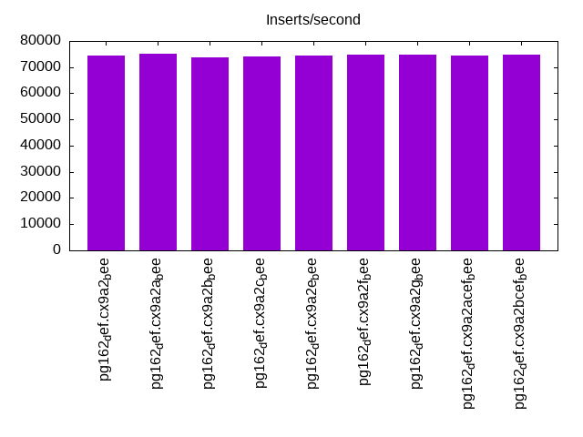
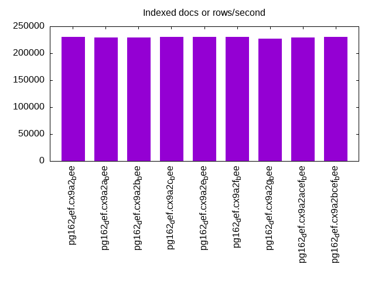
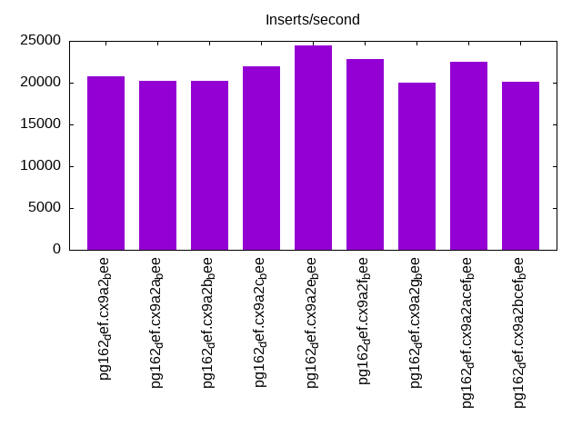
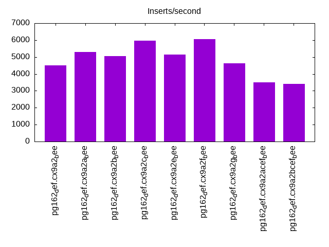
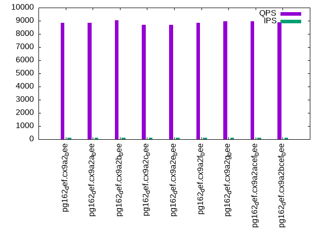
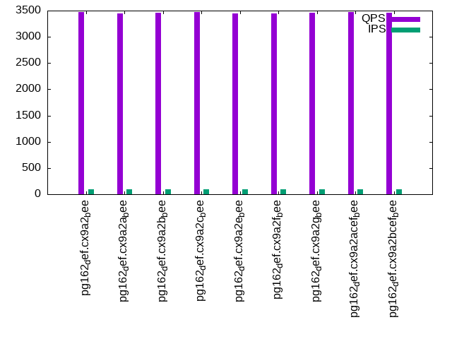
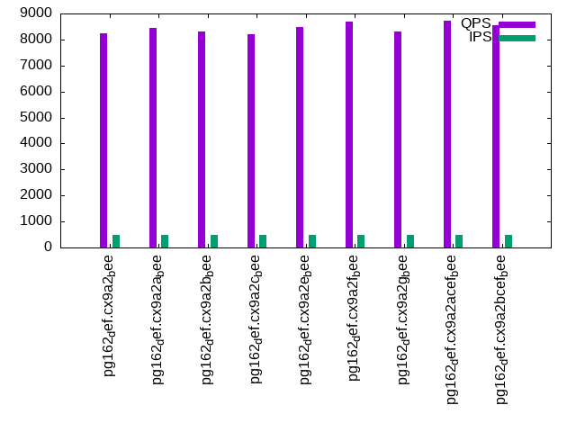
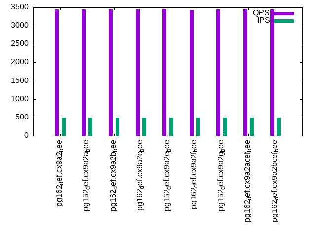
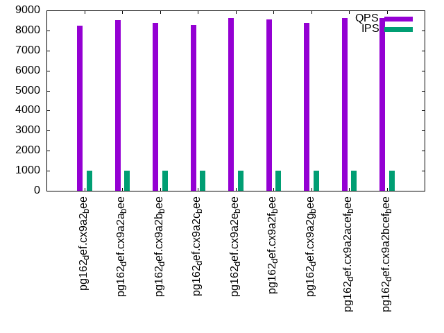
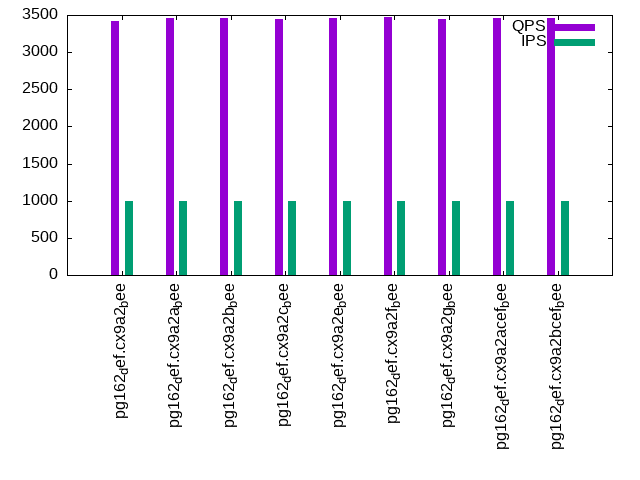

This is a report for the insert benchmark with 30M docs and 1 client(s). It is generated by scripts (bash, awk, sed) and Tufte might not be impressed. An overview of the insert benchmark is here and a short update is here. Below, by DBMS, I mean DBMS+version.config. An example is my8020.c10b40 where my means MySQL, 8020 is version 8.0.20 and c10b40 is the name for the configuration file.
The test server has 8 AMD cores, 16G RAM and an NVMe SSD. It is described here as the Beelink. The benchmark was run with 1 client and there were 1 or 3 connections per client (1 for queries or inserts without rate limits, 1+1 for rate limited inserts+deletes). It uses 1 table. It loads 30M rows per table without secondary indexes, creates 3 secondary indexes per table, then inserts 80m+20m rows per table with a delete per insert to avoid growing the table. It then does 6 read+write tests for 3600s each that do queries as fast as possible with 100,100,500,500,1000,1000 inserts/s and the same for deletes/s per client concurrent with the queries. The database is cached in memory. Clients and the DBMS share one server. The per-database configs are in the per-database subdirectories here.
The tested DBMS are:
The numbers are inserts/s for l.i0, l.i1 and l.i2, indexed docs (or rows) /s for l.x and queries/s for qr100, qp100 thru qr1000, qp1000" The values are the average rate over the entire test for inserts (IPS) and queries (QPS). The range of values for IPS and QPS is split into 3 parts: bottom 25%, middle 50%, top 25%. Values in the bottom 25% have a red background, values in the top 25% have a green background and values in the middle have no color. A gray background is used for values that can be ignored because the DBMS did not sustain the target insert rate. Red backgrounds are not used when the minimum value is within 80% of the max value.
| dbms | l.i0 | l.x | l.i1 | l.i2 | qr100 | qp100 | qr500 | qp500 | qr1000 | qp1000 |
|---|---|---|---|---|---|---|---|---|---|---|
| pg162_def.cx9a2_bee | 74442 | 230770 | 20790 | 4506 | 8841 | 3468 | 8253 | 3448 | 8238 | 3425 |
| pg162_def.cx9a2a_bee | 75000 | 229008 | 20222 | 5304 | 8858 | 3448 | 8434 | 3445 | 8520 | 3466 |
| pg162_def.cx9a2b_bee | 73710 | 229008 | 20248 | 5052 | 9025 | 3460 | 8324 | 3441 | 8373 | 3465 |
| pg162_def.cx9a2c_bee | 74257 | 230770 | 21912 | 5963 | 8706 | 3478 | 8221 | 3448 | 8285 | 3452 |
| pg162_def.cx9a2e_bee | 74442 | 230770 | 24502 | 5135 | 8709 | 3444 | 8470 | 3459 | 8605 | 3453 |
| pg162_def.cx9a2f_bee | 74627 | 230770 | 22772 | 6048 | 8854 | 3441 | 8680 | 3431 | 8557 | 3476 |
| pg162_def.cx9a2g_bee | 74627 | 227273 | 20035 | 4625 | 8958 | 3464 | 8296 | 3443 | 8372 | 3440 |
| pg162_def.cx9a2acef_bee | 74442 | 229008 | 22459 | 3500 | 8979 | 3478 | 8729 | 3464 | 8605 | 3461 |
| pg162_def.cx9a2bcef_bee | 74627 | 230770 | 20121 | 3406 | 8883 | 3457 | 8537 | 3440 | 8625 | 3458 |
This table has relative throughput, throughput for the DBMS relative to the DBMS in the first line, using the absolute throughput from the previous table. Values less than 0.95 have a yellow background. Values greater than 1.05 have a blue background.
| dbms | l.i0 | l.x | l.i1 | l.i2 | qr100 | qp100 | qr500 | qp500 | qr1000 | qp1000 |
|---|---|---|---|---|---|---|---|---|---|---|
| pg162_def.cx9a2_bee | 1.00 | 1.00 | 1.00 | 1.00 | 1.00 | 1.00 | 1.00 | 1.00 | 1.00 | 1.00 |
| pg162_def.cx9a2a_bee | 1.01 | 0.99 | 0.97 | 1.18 | 1.00 | 0.99 | 1.02 | 1.00 | 1.03 | 1.01 |
| pg162_def.cx9a2b_bee | 0.99 | 0.99 | 0.97 | 1.12 | 1.02 | 1.00 | 1.01 | 1.00 | 1.02 | 1.01 |
| pg162_def.cx9a2c_bee | 1.00 | 1.00 | 1.05 | 1.32 | 0.98 | 1.00 | 1.00 | 1.00 | 1.01 | 1.01 |
| pg162_def.cx9a2e_bee | 1.00 | 1.00 | 1.18 | 1.14 | 0.99 | 0.99 | 1.03 | 1.00 | 1.04 | 1.01 |
| pg162_def.cx9a2f_bee | 1.00 | 1.00 | 1.10 | 1.34 | 1.00 | 0.99 | 1.05 | 1.00 | 1.04 | 1.01 |
| pg162_def.cx9a2g_bee | 1.00 | 0.98 | 0.96 | 1.03 | 1.01 | 1.00 | 1.01 | 1.00 | 1.02 | 1.00 |
| pg162_def.cx9a2acef_bee | 1.00 | 0.99 | 1.08 | 0.78 | 1.02 | 1.00 | 1.06 | 1.00 | 1.04 | 1.01 |
| pg162_def.cx9a2bcef_bee | 1.00 | 1.00 | 0.97 | 0.76 | 1.00 | 1.00 | 1.03 | 1.00 | 1.05 | 1.01 |
This lists the average rate of inserts/s for the tests that do inserts concurrent with queries. For such tests the query rate is listed in the table above. The read+write tests are setup so that the insert rate should match the target rate every second. Cells that are not at least 95% of the target have a red background to indicate a failure to satisfy the target.
| dbms | qr100.L1 | qp100.L2 | qr500.L3 | qp500.L4 | qr1000.L5 | qp1000.L6 |
|---|---|---|---|---|---|---|
| pg162_def.cx9a2_bee | 100 | 100 | 499 | 499 | 998 | 998 |
| pg162_def.cx9a2a_bee | 100 | 100 | 499 | 499 | 998 | 999 |
| pg162_def.cx9a2b_bee | 100 | 100 | 499 | 499 | 998 | 998 |
| pg162_def.cx9a2c_bee | 100 | 100 | 499 | 499 | 998 | 998 |
| pg162_def.cx9a2e_bee | 100 | 100 | 499 | 499 | 998 | 998 |
| pg162_def.cx9a2f_bee | 100 | 100 | 499 | 499 | 998 | 998 |
| pg162_def.cx9a2g_bee | 100 | 100 | 499 | 499 | 998 | 998 |
| pg162_def.cx9a2acef_bee | 100 | 100 | 499 | 499 | 999 | 998 |
| pg162_def.cx9a2bcef_bee | 100 | 100 | 499 | 499 | 998 | 998 |
| target | 100 | 100 | 500 | 500 | 1000 | 1000 |
l.i0: load without secondary indexes. Graphs for performance per 1-second interval are here.
Average throughput:
Insert response time histogram: each cell has the percentage of responses that take <= the time in the header and max is the max response time in seconds. For the max column values in the top 25% of the range have a red background and in the bottom 25% of the range have a green background. The red background is not used when the min value is within 80% of the max value.
| dbms | 256us | 1ms | 4ms | 16ms | 64ms | 256ms | 1s | 4s | 16s | gt | max |
|---|---|---|---|---|---|---|---|---|---|---|---|
| pg162_def.cx9a2_bee | 100.000 | 0.003 | |||||||||
| pg162_def.cx9a2a_bee | 100.000 | 0.003 | |||||||||
| pg162_def.cx9a2b_bee | 100.000 | 0.003 | |||||||||
| pg162_def.cx9a2c_bee | 100.000 | 0.003 | |||||||||
| pg162_def.cx9a2e_bee | 100.000 | 0.003 | |||||||||
| pg162_def.cx9a2f_bee | 100.000 | 0.003 | |||||||||
| pg162_def.cx9a2g_bee | 100.000 | 0.003 | |||||||||
| pg162_def.cx9a2acef_bee | 100.000 | 0.004 | |||||||||
| pg162_def.cx9a2bcef_bee | 100.000 | 0.003 |
Performance metrics for the DBMS listed above. Some are normalized by throughput, others are not. Legend for results is here.
ips qps rps rmbps wps wmbps rpq rkbpq wpi wkbpi csps cpups cspq cpupq dbgb1 dbgb2 rss maxop p50 p99 tag 74442 0 0 0.0 86.8 31.9 0.000 0.000 0.001 0.439 9234 23.0 0.124 25 2.9 7.8 0.2 0.003 74855 72994 pg162_def.cx9a2_bee 75000 0 0 0.0 87.2 32.0 0.000 0.000 0.001 0.437 9257 23.2 0.123 25 2.9 7.8 2.9 0.003 75147 73217 pg162_def.cx9a2a_bee 73710 0 0 0.0 86.5 31.7 0.000 0.000 0.001 0.440 9133 22.9 0.124 25 2.9 7.8 0.2 0.003 74120 71617 pg162_def.cx9a2b_bee 74257 0 0 0.0 87.2 31.8 0.000 0.000 0.001 0.439 9261 23.5 0.125 25 2.9 7.8 0.2 0.003 74527 71958 pg162_def.cx9a2c_bee 74442 0 0 0.0 87.1 32.0 0.000 0.000 0.001 0.440 9264 23.2 0.124 25 2.9 7.8 2.8 0.003 75017 71947 pg162_def.cx9a2e_bee 74627 0 0 0.0 87.2 32.0 0.000 0.000 0.001 0.439 9403 23.1 0.126 25 2.9 7.8 2.8 0.003 75015 72251 pg162_def.cx9a2f_bee 74627 0 0 0.0 87.0 32.0 0.000 0.000 0.001 0.440 9244 23.1 0.124 25 2.9 7.8 0.2 0.003 75020 73013 pg162_def.cx9a2g_bee 74442 0 0 0.0 87.4 32.0 0.000 0.000 0.001 0.440 9319 23.5 0.125 25 2.9 7.8 2.8 0.004 75026 70888 pg162_def.cx9a2acef_bee 74627 0 0 0.0 87.6 32.0 0.000 0.000 0.001 0.439 9280 23.5 0.124 25 2.9 7.8 0.1 0.003 74919 72992 pg162_def.cx9a2bcef_bee
l.x: create secondary indexes.
Average throughput:
Performance metrics for the DBMS listed above. Some are normalized by throughput, others are not. Legend for results is here.
ips qps rps rmbps wps wmbps rpq rkbpq wpi wkbpi csps cpups cspq cpupq dbgb1 dbgb2 rss maxop p50 p99 tag 230770 0 0 0.0 180.9 84.5 0.000 0.000 0.001 0.375 429 11.3 0.002 4 5.8 13.3 0.0 0.003 NA NA pg162_def.cx9a2_bee 229008 0 0 0.0 171.3 79.7 0.000 0.000 0.001 0.357 589 11.4 0.003 4 5.8 13.3 3.1 0.003 NA NA pg162_def.cx9a2a_bee 229008 0 0 0.0 168.5 78.3 0.000 0.000 0.001 0.350 439 11.4 0.002 4 5.8 13.3 3.1 0.003 NA NA pg162_def.cx9a2b_bee 230770 0 0 0.0 171.8 79.6 0.000 0.000 0.001 0.353 671 11.7 0.003 4 5.8 13.3 3.1 0.003 NA NA pg162_def.cx9a2c_bee 230770 0 0 0.0 183.2 85.4 0.000 0.000 0.001 0.379 700 11.4 0.003 4 5.8 13.3 3.1 0.003 NA NA pg162_def.cx9a2e_bee 230770 0 0 0.0 183.4 85.2 0.000 0.000 0.001 0.378 722 11.5 0.003 4 5.8 13.3 3.1 0.002 NA NA pg162_def.cx9a2f_bee 227273 0 0 0.0 162.5 75.8 0.000 0.000 0.001 0.342 407 11.4 0.002 4 5.8 13.3 3.1 0.003 NA NA pg162_def.cx9a2g_bee 229008 0 0 0.0 164.3 76.3 0.000 0.000 0.001 0.341 505 11.7 0.002 4 5.8 13.3 3.1 0.003 NA NA pg162_def.cx9a2acef_bee 230770 0 0 0.0 176.6 81.8 0.000 0.000 0.001 0.363 488 11.5 0.002 4 5.8 13.3 3.1 0.003 NA NA pg162_def.cx9a2bcef_bee
l.i1: continue load after secondary indexes created with 50 inserts per transaction. Graphs for performance per 1-second interval are here.
Average throughput:
Insert response time histogram: each cell has the percentage of responses that take <= the time in the header and max is the max response time in seconds. For the max column values in the top 25% of the range have a red background and in the bottom 25% of the range have a green background. The red background is not used when the min value is within 80% of the max value.
| dbms | 256us | 1ms | 4ms | 16ms | 64ms | 256ms | 1s | 4s | 16s | gt | max |
|---|---|---|---|---|---|---|---|---|---|---|---|
| pg162_def.cx9a2_bee | 99.998 | 0.001 | nonzero | 0.021 | |||||||
| pg162_def.cx9a2a_bee | 99.998 | 0.002 | nonzero | 0.036 | |||||||
| pg162_def.cx9a2b_bee | 99.998 | 0.002 | nonzero | 0.020 | |||||||
| pg162_def.cx9a2c_bee | 99.999 | 0.001 | 0.015 | ||||||||
| pg162_def.cx9a2e_bee | 99.998 | 0.002 | nonzero | 0.019 | |||||||
| pg162_def.cx9a2f_bee | 99.997 | 0.003 | nonzero | 0.038 | |||||||
| pg162_def.cx9a2g_bee | 99.998 | 0.002 | nonzero | 0.032 | |||||||
| pg162_def.cx9a2acef_bee | 99.996 | 0.002 | 0.002 | 0.040 | |||||||
| pg162_def.cx9a2bcef_bee | 99.999 | 0.001 | nonzero | 0.021 |
Delete response time histogram: each cell has the percentage of responses that take <= the time in the header and max is the max response time in seconds. For the max column values in the top 25% of the range have a red background and in the bottom 25% of the range have a green background. The red background is not used when the min value is within 80% of the max value.
| dbms | 256us | 1ms | 4ms | 16ms | 64ms | 256ms | 1s | 4s | 16s | gt | max |
|---|---|---|---|---|---|---|---|---|---|---|---|
| pg162_def.cx9a2_bee | 0.109 | 82.300 | 3.475 | 14.116 | nonzero | 0.019 | |||||
| pg162_def.cx9a2a_bee | 0.103 | 81.961 | 2.923 | 15.013 | nonzero | 0.036 | |||||
| pg162_def.cx9a2b_bee | 0.114 | 81.251 | 3.414 | 15.221 | nonzero | 0.018 | |||||
| pg162_def.cx9a2c_bee | 0.232 | 80.383 | 7.244 | 12.142 | 0.013 | ||||||
| pg162_def.cx9a2e_bee | 0.120 | 82.358 | 11.909 | 5.613 | nonzero | 0.017 | |||||
| pg162_def.cx9a2f_bee | 0.310 | 82.346 | 8.443 | 8.902 | nonzero | 0.018 | |||||
| pg162_def.cx9a2g_bee | 0.131 | 82.176 | 2.496 | 15.197 | nonzero | 0.022 | |||||
| pg162_def.cx9a2acef_bee | 0.231 | 79.429 | 9.044 | 11.295 | 0.001 | 0.037 | |||||
| pg162_def.cx9a2bcef_bee | 0.205 | 79.627 | 1.319 | 18.849 | nonzero | 0.016 |
Performance metrics for the DBMS listed above. Some are normalized by throughput, others are not. Legend for results is here.
ips qps rps rmbps wps wmbps rpq rkbpq wpi wkbpi csps cpups cspq cpupq dbgb1 dbgb2 rss maxop p50 p99 tag 20790 0 27 0.1 88.6 25.7 0.001 0.006 0.004 1.264 10108 22.3 0.486 86 8.2 48.2 3.0 0.021 28608 5498 pg162_def.cx9a2_bee 20222 0 27 0.1 87.7 25.1 0.001 0.006 0.004 1.271 9841 22.0 0.487 87 8.2 47.2 8.0 0.036 28469 4944 pg162_def.cx9a2a_bee 20248 0 27 0.1 85.7 24.9 0.001 0.006 0.004 1.257 9845 22.1 0.486 87 8.2 47.1 7.3 0.020 28380 4645 pg162_def.cx9a2b_bee 21912 0 30 0.1 93.2 26.8 0.001 0.006 0.004 1.253 10776 23.2 0.492 85 8.1 47.4 8.1 0.015 28617 6047 pg162_def.cx9a2c_bee 24502 0 31 0.1 107.2 30.1 0.001 0.006 0.004 1.257 11901 24.3 0.486 79 7.8 47.8 7.7 0.019 28968 5647 pg162_def.cx9a2e_bee 22772 0 29 0.1 99.7 28.0 0.001 0.006 0.004 1.260 11303 23.6 0.496 83 7.9 47.9 6.4 0.038 29019 5596 pg162_def.cx9a2f_bee 20035 0 26 0.1 85.0 24.7 0.001 0.006 0.004 1.262 9753 21.9 0.487 87 8.2 48.2 6.0 0.032 28569 5594 pg162_def.cx9a2g_bee 22459 0 28 0.1 100.7 27.6 0.001 0.005 0.004 1.258 11064 23.9 0.493 85 7.8 47.8 6.5 0.040 28767 6892 pg162_def.cx9a2acef_bee 20121 0 25 0.1 90.2 24.6 0.001 0.006 0.004 1.252 9929 22.8 0.493 91 7.7 47.1 6.0 0.021 28168 6842 pg162_def.cx9a2bcef_bee
l.i2: continue load after secondary indexes created with 5 inserts per transaction. Graphs for performance per 1-second interval are here.
Average throughput:
Insert response time histogram: each cell has the percentage of responses that take <= the time in the header and max is the max response time in seconds. For the max column values in the top 25% of the range have a red background and in the bottom 25% of the range have a green background. The red background is not used when the min value is within 80% of the max value.
| dbms | 256us | 1ms | 4ms | 16ms | 64ms | 256ms | 1s | 4s | 16s | gt | max |
|---|---|---|---|---|---|---|---|---|---|---|---|
| pg162_def.cx9a2_bee | 18.831 | 81.167 | 0.002 | nonzero | 0.008 | ||||||
| pg162_def.cx9a2a_bee | 17.197 | 82.800 | 0.003 | nonzero | nonzero | 0.022 | |||||
| pg162_def.cx9a2b_bee | 19.294 | 80.704 | 0.002 | nonzero | nonzero | 0.021 | |||||
| pg162_def.cx9a2c_bee | 21.536 | 78.461 | 0.002 | nonzero | nonzero | 0.018 | |||||
| pg162_def.cx9a2e_bee | 17.115 | 82.882 | 0.002 | nonzero | nonzero | 0.020 | |||||
| pg162_def.cx9a2f_bee | 23.615 | 76.381 | 0.003 | 0.001 | nonzero | 0.026 | |||||
| pg162_def.cx9a2g_bee | 18.012 | 81.986 | 0.002 | nonzero | nonzero | 0.020 | |||||
| pg162_def.cx9a2acef_bee | 21.124 | 78.872 | 0.003 | nonzero | nonzero | 0.022 | |||||
| pg162_def.cx9a2bcef_bee | 20.771 | 79.227 | 0.002 | nonzero | nonzero | 0.020 |
Delete response time histogram: each cell has the percentage of responses that take <= the time in the header and max is the max response time in seconds. For the max column values in the top 25% of the range have a red background and in the bottom 25% of the range have a green background. The red background is not used when the min value is within 80% of the max value.
| dbms | 256us | 1ms | 4ms | 16ms | 64ms | 256ms | 1s | 4s | 16s | gt | max |
|---|---|---|---|---|---|---|---|---|---|---|---|
| pg162_def.cx9a2_bee | 55.000 | 26.064 | 9.076 | 9.860 | 0.013 | ||||||
| pg162_def.cx9a2a_bee | 54.038 | 26.823 | 14.196 | 4.943 | nonzero | 0.021 | |||||
| pg162_def.cx9a2b_bee | 55.421 | 25.352 | 12.163 | 7.064 | nonzero | 0.021 | |||||
| pg162_def.cx9a2c_bee | 57.425 | 23.500 | 16.890 | 2.185 | nonzero | 0.018 | |||||
| pg162_def.cx9a2e_bee | 53.439 | 26.308 | 15.439 | 4.813 | nonzero | 0.020 | |||||
| pg162_def.cx9a2f_bee | 57.578 | 23.366 | 16.669 | 2.387 | nonzero | 0.026 | |||||
| pg162_def.cx9a2g_bee | 54.485 | 25.786 | 10.239 | 9.490 | nonzero | 0.020 | |||||
| pg162_def.cx9a2acef_bee | 56.603 | 23.322 | 0.229 | 19.847 | nonzero | 0.022 | |||||
| pg162_def.cx9a2bcef_bee | 56.044 | 23.450 | 0.423 | 20.083 | nonzero | 0.020 |
Performance metrics for the DBMS listed above. Some are normalized by throughput, others are not. Legend for results is here.
ips qps rps rmbps wps wmbps rpq rkbpq wpi wkbpi csps cpups cspq cpupq dbgb1 dbgb2 rss maxop p50 p99 tag 4506 0 0 0.0 35.1 7.1 0.000 0.000 0.008 1.607 21433 18.4 4.757 327 8.2 48.3 3.2 0.008 1249 624 pg162_def.cx9a2_bee 5304 0 0 0.0 35.9 7.8 0.000 0.000 0.007 1.509 25308 19.6 4.772 296 8.2 48.3 5.8 0.022 1618 849 pg162_def.cx9a2a_bee 5052 0 0 0.0 35.3 7.3 0.000 0.000 0.007 1.483 24072 19.2 4.765 304 8.2 47.2 8.3 0.021 1448 759 pg162_def.cx9a2b_bee 5963 0 0 0.0 37.3 8.0 0.000 0.000 0.006 1.382 28483 20.7 4.777 278 8.2 47.4 0.0 0.018 1989 1004 pg162_def.cx9a2c_bee 5135 0 0 0.0 33.7 7.1 0.000 0.000 0.007 1.416 24456 19.5 4.763 304 7.9 47.9 4.3 0.020 1638 634 pg162_def.cx9a2e_bee 6048 0 0 0.0 37.2 8.1 0.000 0.000 0.006 1.364 29066 20.7 4.806 274 7.9 48.0 6.4 0.026 2063 1019 pg162_def.cx9a2f_bee 4625 0 0 0.0 35.3 7.2 0.000 0.000 0.008 1.597 22010 18.6 4.759 322 8.2 48.3 8.4 0.020 1289 744 pg162_def.cx9a2g_bee 3500 0 0 0.0 30.5 5.8 0.000 0.000 0.009 1.698 16789 17.4 4.797 398 7.8 47.9 7.9 0.022 895 660 pg162_def.cx9a2acef_bee 3406 0 0 0.0 30.8 5.7 0.000 0.000 0.009 1.710 16337 17.3 4.796 406 7.8 47.2 4.4 0.020 884 669 pg162_def.cx9a2bcef_bee
qr100.L1: range queries with 100 insert/s per client. Graphs for performance per 1-second interval are here.
Average throughput:
Query response time histogram: each cell has the percentage of responses that take <= the time in the header and max is the max response time in seconds. For max values in the top 25% of the range have a red background and in the bottom 25% of the range have a green background. The red background is not used when the min value is within 80% of the max value.
| dbms | 256us | 1ms | 4ms | 16ms | 64ms | 256ms | 1s | 4s | 16s | gt | max |
|---|---|---|---|---|---|---|---|---|---|---|---|
| pg162_def.cx9a2_bee | 99.948 | 0.052 | nonzero | nonzero | 0.004 | ||||||
| pg162_def.cx9a2a_bee | 99.959 | 0.040 | nonzero | 0.003 | |||||||
| pg162_def.cx9a2b_bee | 99.961 | 0.039 | nonzero | nonzero | 0.005 | ||||||
| pg162_def.cx9a2c_bee | 99.922 | 0.077 | nonzero | 0.003 | |||||||
| pg162_def.cx9a2e_bee | 99.963 | 0.036 | nonzero | 0.003 | |||||||
| pg162_def.cx9a2f_bee | 99.917 | 0.083 | nonzero | nonzero | 0.004 | ||||||
| pg162_def.cx9a2g_bee | 99.957 | 0.043 | nonzero | 0.004 | |||||||
| pg162_def.cx9a2acef_bee | 99.919 | 0.081 | nonzero | 0.003 | |||||||
| pg162_def.cx9a2bcef_bee | 99.915 | 0.085 | nonzero | nonzero | 0.005 |
Insert response time histogram: each cell has the percentage of responses that take <= the time in the header and max is the max response time in seconds. For max values in the top 25% of the range have a red background and in the bottom 25% of the range have a green background. The red background is not used when the min value is within 80% of the max value.
| dbms | 256us | 1ms | 4ms | 16ms | 64ms | 256ms | 1s | 4s | 16s | gt | max |
|---|---|---|---|---|---|---|---|---|---|---|---|
| pg162_def.cx9a2_bee | 99.833 | 0.167 | 0.006 | ||||||||
| pg162_def.cx9a2a_bee | 99.806 | 0.194 | 0.008 | ||||||||
| pg162_def.cx9a2b_bee | 99.875 | 0.125 | 0.009 | ||||||||
| pg162_def.cx9a2c_bee | 99.833 | 0.167 | 0.008 | ||||||||
| pg162_def.cx9a2e_bee | 99.736 | 0.264 | 0.008 | ||||||||
| pg162_def.cx9a2f_bee | 99.847 | 0.153 | 0.009 | ||||||||
| pg162_def.cx9a2g_bee | 99.833 | 0.167 | 0.006 | ||||||||
| pg162_def.cx9a2acef_bee | 99.833 | 0.167 | 0.008 | ||||||||
| pg162_def.cx9a2bcef_bee | 99.889 | 0.111 | 0.007 |
Delete response time histogram: each cell has the percentage of responses that take <= the time in the header and max is the max response time in seconds. For max values in the top 25% of the range have a red background and in the bottom 25% of the range have a green background. The red background is not used when the min value is within 80% of the max value.
| dbms | 256us | 1ms | 4ms | 16ms | 64ms | 256ms | 1s | 4s | 16s | gt | max |
|---|---|---|---|---|---|---|---|---|---|---|---|
| pg162_def.cx9a2_bee | 13.125 | 71.611 | 15.264 | 0.005 | |||||||
| pg162_def.cx9a2a_bee | 0.125 | 32.069 | 66.847 | 0.958 | 0.005 | ||||||
| pg162_def.cx9a2b_bee | 0.097 | 29.528 | 68.542 | 1.833 | 0.005 | ||||||
| pg162_def.cx9a2c_bee | 0.028 | 22.750 | 71.319 | 5.903 | 0.007 | ||||||
| pg162_def.cx9a2e_bee | 0.153 | 26.528 | 69.681 | 3.639 | 0.006 | ||||||
| pg162_def.cx9a2f_bee | 0.597 | 40.861 | 58.472 | 0.069 | 0.006 | ||||||
| pg162_def.cx9a2g_bee | 0.208 | 26.000 | 69.708 | 4.083 | 0.005 | ||||||
| pg162_def.cx9a2acef_bee | 0.486 | 35.292 | 64.097 | 0.125 | 0.006 | ||||||
| pg162_def.cx9a2bcef_bee | 23.069 | 70.764 | 6.167 | 0.005 |
Performance metrics for the DBMS listed above. Some are normalized by throughput, others are not. Legend for results is here.
ips qps rps rmbps wps wmbps rpq rkbpq wpi wkbpi csps cpups cspq cpupq dbgb1 dbgb2 rss maxop p50 p99 tag 100 8841 0 0.0 35.8 1.2 0.000 0.000 0.359 12.051 33956 12.9 3.841 117 8.2 42.5 1.1 0.004 8572 8236 pg162_def.cx9a2_bee 100 8858 0 0.0 35.8 1.2 0.000 0.000 0.359 12.055 34026 12.8 3.841 116 8.2 45.5 1.1 0.003 8599 8282 pg162_def.cx9a2a_bee 100 9025 0 0.0 35.8 1.2 0.000 0.000 0.359 12.051 34649 12.8 3.839 113 8.2 45.1 1.0 0.005 8630 8311 pg162_def.cx9a2b_bee 100 8706 0 0.0 35.4 1.2 0.000 0.000 0.355 12.080 33577 13.3 3.857 122 8.2 44.8 1.1 0.003 8358 8023 pg162_def.cx9a2c_bee 100 8709 0 0.0 33.1 1.2 0.000 0.000 0.332 12.201 33456 13.0 3.842 119 7.9 44.5 1.0 0.003 8393 8106 pg162_def.cx9a2e_bee 100 8854 0 0.0 33.5 1.2 0.000 0.000 0.336 12.231 34275 13.3 3.871 120 7.9 44.5 3.8 0.004 8548 8200 pg162_def.cx9a2f_bee 100 8958 0 0.0 35.7 1.2 0.000 0.000 0.357 12.039 34411 12.6 3.842 113 8.2 42.7 1.1 0.004 8488 8124 pg162_def.cx9a2g_bee 100 8979 0 0.0 32.9 1.2 0.000 0.000 0.330 12.237 34590 13.3 3.852 119 7.8 41.2 0.9 0.003 8614 8310 pg162_def.cx9a2acef_bee 100 8883 0 0.0 32.8 1.2 0.000 0.000 0.328 12.252 34220 13.2 3.853 119 7.8 41.3 3.5 0.005 8502 8230 pg162_def.cx9a2bcef_bee
qp100.L2: point queries with 100 insert/s per client. Graphs for performance per 1-second interval are here.
Average throughput:
Query response time histogram: each cell has the percentage of responses that take <= the time in the header and max is the max response time in seconds. For max values in the top 25% of the range have a red background and in the bottom 25% of the range have a green background. The red background is not used when the min value is within 80% of the max value.
| dbms | 256us | 1ms | 4ms | 16ms | 64ms | 256ms | 1s | 4s | 16s | gt | max |
|---|---|---|---|---|---|---|---|---|---|---|---|
| pg162_def.cx9a2_bee | 86.028 | 13.972 | nonzero | 0.003 | |||||||
| pg162_def.cx9a2a_bee | 85.548 | 14.452 | nonzero | 0.003 | |||||||
| pg162_def.cx9a2b_bee | 85.918 | 14.082 | nonzero | 0.004 | |||||||
| pg162_def.cx9a2c_bee | 86.290 | 13.710 | nonzero | 0.003 | |||||||
| pg162_def.cx9a2e_bee | 85.631 | 14.369 | nonzero | 0.003 | |||||||
| pg162_def.cx9a2f_bee | 85.714 | 14.286 | nonzero | 0.003 | |||||||
| pg162_def.cx9a2g_bee | 85.834 | 14.165 | nonzero | 0.003 | |||||||
| pg162_def.cx9a2acef_bee | 86.365 | 13.635 | nonzero | nonzero | 0.004 | ||||||
| pg162_def.cx9a2bcef_bee | 85.897 | 14.103 | nonzero | 0.003 |
Insert response time histogram: each cell has the percentage of responses that take <= the time in the header and max is the max response time in seconds. For max values in the top 25% of the range have a red background and in the bottom 25% of the range have a green background. The red background is not used when the min value is within 80% of the max value.
| dbms | 256us | 1ms | 4ms | 16ms | 64ms | 256ms | 1s | 4s | 16s | gt | max |
|---|---|---|---|---|---|---|---|---|---|---|---|
| pg162_def.cx9a2_bee | 99.903 | 0.097 | 0.006 | ||||||||
| pg162_def.cx9a2a_bee | 99.958 | 0.042 | 0.008 | ||||||||
| pg162_def.cx9a2b_bee | 99.903 | 0.097 | 0.007 | ||||||||
| pg162_def.cx9a2c_bee | 99.889 | 0.111 | 0.008 | ||||||||
| pg162_def.cx9a2e_bee | 99.889 | 0.111 | 0.008 | ||||||||
| pg162_def.cx9a2f_bee | 99.917 | 0.083 | 0.006 | ||||||||
| pg162_def.cx9a2g_bee | 99.903 | 0.097 | 0.006 | ||||||||
| pg162_def.cx9a2acef_bee | 99.889 | 0.111 | 0.008 | ||||||||
| pg162_def.cx9a2bcef_bee | 99.917 | 0.083 | 0.008 |
Delete response time histogram: each cell has the percentage of responses that take <= the time in the header and max is the max response time in seconds. For max values in the top 25% of the range have a red background and in the bottom 25% of the range have a green background. The red background is not used when the min value is within 80% of the max value.
| dbms | 256us | 1ms | 4ms | 16ms | 64ms | 256ms | 1s | 4s | 16s | gt | max |
|---|---|---|---|---|---|---|---|---|---|---|---|
| pg162_def.cx9a2_bee | 1.806 | 96.889 | 0.056 | 1.250 | 0.009 | ||||||
| pg162_def.cx9a2a_bee | 1.403 | 98.583 | 0.014 | 0.002 | |||||||
| pg162_def.cx9a2b_bee | 1.389 | 98.569 | 0.042 | 0.003 | |||||||
| pg162_def.cx9a2c_bee | 1.583 | 98.361 | 0.056 | 0.003 | |||||||
| pg162_def.cx9a2e_bee | 1.264 | 98.694 | 0.042 | 0.003 | |||||||
| pg162_def.cx9a2f_bee | 1.028 | 98.958 | 0.014 | 0.002 | |||||||
| pg162_def.cx9a2g_bee | 1.542 | 98.431 | 0.028 | 0.003 | |||||||
| pg162_def.cx9a2acef_bee | 0.875 | 99.042 | 0.083 | 0.003 | |||||||
| pg162_def.cx9a2bcef_bee | 1.125 | 98.778 | 0.097 | 0.003 |
Performance metrics for the DBMS listed above. Some are normalized by throughput, others are not. Legend for results is here.
ips qps rps rmbps wps wmbps rpq rkbpq wpi wkbpi csps cpups cspq cpupq dbgb1 dbgb2 rss maxop p50 p99 tag 100 3468 0 0.0 62.2 1.5 0.000 0.000 0.623 15.520 14356 13.1 4.140 302 8.3 40.3 4.2 0.003 3451 3339 pg162_def.cx9a2_bee 100 3448 0 0.0 62.0 1.5 0.000 0.000 0.621 15.483 14277 13.1 4.141 304 8.2 43.2 1.0 0.003 3421 3308 pg162_def.cx9a2a_bee 100 3460 0 0.0 61.9 1.5 0.000 0.000 0.620 15.470 14315 13.1 4.138 303 8.2 42.9 4.2 0.004 3436 3324 pg162_def.cx9a2b_bee 100 3478 0 0.0 61.4 1.5 0.000 0.000 0.615 15.511 14448 13.3 4.154 306 8.2 42.6 4.1 0.003 3452 3326 pg162_def.cx9a2c_bee 100 3444 0 0.0 58.3 1.5 0.000 0.000 0.584 15.353 14264 13.1 4.141 304 7.9 42.2 3.5 0.003 3420 3292 pg162_def.cx9a2e_bee 100 3441 0 0.0 58.6 1.5 0.000 0.000 0.587 15.327 14269 13.1 4.147 305 7.9 42.2 0.6 0.003 3420 3307 pg162_def.cx9a2f_bee 100 3464 0 0.0 61.9 1.5 0.000 0.000 0.620 15.468 14349 13.1 4.143 303 8.2 40.5 0.9 0.003 3437 3324 pg162_def.cx9a2g_bee 100 3478 0 0.0 57.6 1.5 0.000 0.000 0.577 15.303 14439 13.3 4.151 306 7.8 38.8 3.8 0.004 3453 3324 pg162_def.cx9a2acef_bee 100 3457 0 0.0 57.6 1.5 0.000 0.000 0.577 15.293 14361 13.3 4.154 308 7.8 39.0 3.4 0.003 3436 3308 pg162_def.cx9a2bcef_bee
qr500.L3: range queries with 500 insert/s per client. Graphs for performance per 1-second interval are here.
Average throughput:
Query response time histogram: each cell has the percentage of responses that take <= the time in the header and max is the max response time in seconds. For max values in the top 25% of the range have a red background and in the bottom 25% of the range have a green background. The red background is not used when the min value is within 80% of the max value.
| dbms | 256us | 1ms | 4ms | 16ms | 64ms | 256ms | 1s | 4s | 16s | gt | max |
|---|---|---|---|---|---|---|---|---|---|---|---|
| pg162_def.cx9a2_bee | 99.922 | 0.077 | nonzero | nonzero | nonzero | 0.019 | |||||
| pg162_def.cx9a2a_bee | 99.928 | 0.071 | 0.001 | nonzero | 0.012 | ||||||
| pg162_def.cx9a2b_bee | 99.924 | 0.076 | nonzero | nonzero | nonzero | 0.018 | |||||
| pg162_def.cx9a2c_bee | 99.855 | 0.145 | nonzero | nonzero | nonzero | 0.018 | |||||
| pg162_def.cx9a2e_bee | 99.941 | 0.059 | nonzero | nonzero | nonzero | 0.027 | |||||
| pg162_def.cx9a2f_bee | 99.943 | 0.057 | nonzero | nonzero | nonzero | 0.023 | |||||
| pg162_def.cx9a2g_bee | 99.922 | 0.077 | nonzero | nonzero | 0.013 | ||||||
| pg162_def.cx9a2acef_bee | 99.907 | 0.093 | nonzero | nonzero | nonzero | 0.017 | |||||
| pg162_def.cx9a2bcef_bee | 99.898 | 0.102 | nonzero | nonzero | nonzero | 0.019 |
Insert response time histogram: each cell has the percentage of responses that take <= the time in the header and max is the max response time in seconds. For max values in the top 25% of the range have a red background and in the bottom 25% of the range have a green background. The red background is not used when the min value is within 80% of the max value.
| dbms | 256us | 1ms | 4ms | 16ms | 64ms | 256ms | 1s | 4s | 16s | gt | max |
|---|---|---|---|---|---|---|---|---|---|---|---|
| pg162_def.cx9a2_bee | 99.969 | 0.031 | 0.008 | ||||||||
| pg162_def.cx9a2a_bee | 99.975 | 0.025 | 0.008 | ||||||||
| pg162_def.cx9a2b_bee | 99.969 | 0.031 | 0.007 | ||||||||
| pg162_def.cx9a2c_bee | 99.961 | 0.033 | 0.006 | 0.021 | |||||||
| pg162_def.cx9a2e_bee | 99.928 | 0.053 | 0.019 | 0.030 | |||||||
| pg162_def.cx9a2f_bee | 99.903 | 0.081 | 0.017 | 0.026 | |||||||
| pg162_def.cx9a2g_bee | 99.967 | 0.033 | 0.015 | ||||||||
| pg162_def.cx9a2acef_bee | 99.953 | 0.042 | 0.006 | 0.020 | |||||||
| pg162_def.cx9a2bcef_bee | 99.947 | 0.042 | 0.011 | 0.023 |
Delete response time histogram: each cell has the percentage of responses that take <= the time in the header and max is the max response time in seconds. For max values in the top 25% of the range have a red background and in the bottom 25% of the range have a green background. The red background is not used when the min value is within 80% of the max value.
| dbms | 256us | 1ms | 4ms | 16ms | 64ms | 256ms | 1s | 4s | 16s | gt | max |
|---|---|---|---|---|---|---|---|---|---|---|---|
| pg162_def.cx9a2_bee | 5.369 | 81.614 | 12.981 | 0.036 | 0.005 | ||||||
| pg162_def.cx9a2a_bee | 6.506 | 80.289 | 13.197 | 0.008 | 0.005 | ||||||
| pg162_def.cx9a2b_bee | 6.239 | 82.158 | 11.597 | 0.006 | 0.004 | ||||||
| pg162_def.cx9a2c_bee | 7.217 | 78.853 | 13.881 | 0.047 | 0.003 | 0.018 | |||||
| pg162_def.cx9a2e_bee | 6.072 | 76.942 | 0.108 | 16.858 | 0.019 | 0.028 | |||||
| pg162_def.cx9a2f_bee | 6.631 | 76.875 | 0.069 | 16.414 | 0.011 | 0.024 | |||||
| pg162_def.cx9a2g_bee | 5.858 | 80.889 | 13.169 | 0.083 | 0.014 | ||||||
| pg162_def.cx9a2acef_bee | 7.153 | 76.219 | 0.172 | 16.453 | 0.003 | 0.017 | |||||
| pg162_def.cx9a2bcef_bee | 7.878 | 75.606 | 0.086 | 16.425 | 0.006 | 0.021 |
Performance metrics for the DBMS listed above. Some are normalized by throughput, others are not. Legend for results is here.
ips qps rps rmbps wps wmbps rpq rkbpq wpi wkbpi csps cpups cspq cpupq dbgb1 dbgb2 rss maxop p50 p99 tag 499 8253 0 0.0 43.0 2.8 0.000 0.000 0.086 5.757 31863 12.8 3.861 124 8.3 36.9 3.8 0.019 8057 7142 pg162_def.cx9a2_bee 499 8434 0 0.0 42.9 2.8 0.000 0.000 0.086 5.756 32566 12.7 3.861 120 8.3 39.8 4.0 0.012 8187 7174 pg162_def.cx9a2a_bee 499 8324 0 0.0 42.9 2.8 0.000 0.000 0.086 5.739 32132 12.9 3.860 124 8.2 39.4 4.0 0.018 8172 7190 pg162_def.cx9a2b_bee 499 8221 0 0.0 42.7 2.8 0.000 0.000 0.086 5.745 31871 13.2 3.877 128 8.3 39.2 4.0 0.018 8040 7048 pg162_def.cx9a2c_bee 499 8470 0 0.0 46.1 2.6 0.000 0.000 0.092 5.406 32711 13.0 3.862 123 7.9 38.9 4.9 0.027 8197 7608 pg162_def.cx9a2e_bee 499 8680 0 0.0 46.3 2.7 0.000 0.000 0.093 5.448 33532 12.9 3.863 119 7.9 38.8 2.8 0.023 8368 7750 pg162_def.cx9a2f_bee 499 8296 0 0.0 42.8 2.8 0.000 0.000 0.086 5.749 32038 12.9 3.862 124 8.3 37.1 4.0 0.013 8026 7065 pg162_def.cx9a2g_bee 499 8729 0 0.0 45.5 2.6 0.000 0.000 0.091 5.390 33796 13.5 3.872 124 7.9 35.5 2.9 0.017 8467 7841 pg162_def.cx9a2acef_bee 499 8537 0 0.0 45.4 2.6 0.000 0.000 0.091 5.400 33043 13.4 3.871 126 7.9 35.7 3.4 0.019 8284 7718 pg162_def.cx9a2bcef_bee
qp500.L4: point queries with 500 insert/s per client. Graphs for performance per 1-second interval are here.
Average throughput:
Query response time histogram: each cell has the percentage of responses that take <= the time in the header and max is the max response time in seconds. For max values in the top 25% of the range have a red background and in the bottom 25% of the range have a green background. The red background is not used when the min value is within 80% of the max value.
| dbms | 256us | 1ms | 4ms | 16ms | 64ms | 256ms | 1s | 4s | 16s | gt | max |
|---|---|---|---|---|---|---|---|---|---|---|---|
| pg162_def.cx9a2_bee | 85.551 | 14.448 | 0.001 | nonzero | 0.004 | ||||||
| pg162_def.cx9a2a_bee | 85.864 | 14.135 | 0.001 | nonzero | 0.022 | ||||||
| pg162_def.cx9a2b_bee | 85.622 | 14.377 | 0.001 | 0.003 | |||||||
| pg162_def.cx9a2c_bee | 85.762 | 14.238 | 0.001 | 0.003 | |||||||
| pg162_def.cx9a2e_bee | 85.882 | 14.117 | 0.001 | 0.003 | |||||||
| pg162_def.cx9a2f_bee | 85.625 | 14.374 | 0.001 | 0.003 | |||||||
| pg162_def.cx9a2g_bee | 85.673 | 14.326 | 0.001 | 0.003 | |||||||
| pg162_def.cx9a2acef_bee | 86.056 | 13.943 | 0.001 | 0.003 | |||||||
| pg162_def.cx9a2bcef_bee | 85.781 | 14.218 | 0.001 | nonzero | 0.005 |
Insert response time histogram: each cell has the percentage of responses that take <= the time in the header and max is the max response time in seconds. For max values in the top 25% of the range have a red background and in the bottom 25% of the range have a green background. The red background is not used when the min value is within 80% of the max value.
| dbms | 256us | 1ms | 4ms | 16ms | 64ms | 256ms | 1s | 4s | 16s | gt | max |
|---|---|---|---|---|---|---|---|---|---|---|---|
| pg162_def.cx9a2_bee | 99.981 | 0.019 | 0.008 | ||||||||
| pg162_def.cx9a2a_bee | 99.986 | 0.014 | 0.008 | ||||||||
| pg162_def.cx9a2b_bee | 99.978 | 0.022 | 0.006 | ||||||||
| pg162_def.cx9a2c_bee | 99.986 | 0.014 | 0.008 | ||||||||
| pg162_def.cx9a2e_bee | 99.953 | 0.022 | 0.025 | 0.023 | |||||||
| pg162_def.cx9a2f_bee | 99.964 | 0.022 | 0.014 | 0.030 | |||||||
| pg162_def.cx9a2g_bee | 99.994 | 0.006 | 0.008 | ||||||||
| pg162_def.cx9a2acef_bee | 99.944 | 0.042 | 0.014 | 0.030 | |||||||
| pg162_def.cx9a2bcef_bee | 99.950 | 0.033 | 0.017 | 0.030 |
Delete response time histogram: each cell has the percentage of responses that take <= the time in the header and max is the max response time in seconds. For max values in the top 25% of the range have a red background and in the bottom 25% of the range have a green background. The red background is not used when the min value is within 80% of the max value.
| dbms | 256us | 1ms | 4ms | 16ms | 64ms | 256ms | 1s | 4s | 16s | gt | max |
|---|---|---|---|---|---|---|---|---|---|---|---|
| pg162_def.cx9a2_bee | 17.933 | 66.061 | 13.983 | 2.022 | 0.007 | ||||||
| pg162_def.cx9a2a_bee | 19.314 | 66.133 | 13.914 | 0.639 | 0.005 | ||||||
| pg162_def.cx9a2b_bee | 18.408 | 67.658 | 13.761 | 0.172 | 0.004 | ||||||
| pg162_def.cx9a2c_bee | 19.917 | 65.825 | 13.392 | 0.867 | 0.006 | ||||||
| pg162_def.cx9a2e_bee | 17.942 | 64.386 | 8.142 | 9.517 | 0.014 | 0.020 | |||||
| pg162_def.cx9a2f_bee | 18.656 | 61.636 | 9.894 | 9.800 | 0.014 | 0.028 | |||||
| pg162_def.cx9a2g_bee | 18.606 | 65.350 | 13.503 | 2.542 | 0.005 | ||||||
| pg162_def.cx9a2acef_bee | 17.119 | 61.503 | 8.728 | 12.639 | 0.011 | 0.023 | |||||
| pg162_def.cx9a2bcef_bee | 16.792 | 59.861 | 8.939 | 14.397 | 0.011 | 0.021 |
Performance metrics for the DBMS listed above. Some are normalized by throughput, others are not. Legend for results is here.
ips qps rps rmbps wps wmbps rpq rkbpq wpi wkbpi csps cpups cspq cpupq dbgb1 dbgb2 rss maxop p50 p99 tag 499 3448 0 0.0 37.0 3.0 0.000 0.000 0.074 6.144 14405 13.4 4.179 311 8.3 32.5 1.7 0.004 3420 3310 pg162_def.cx9a2_bee 499 3445 0 0.0 36.9 3.0 0.000 0.000 0.074 6.125 14400 13.4 4.180 311 8.3 35.4 4.1 0.022 3420 3309 pg162_def.cx9a2a_bee 499 3441 0 0.0 36.9 3.0 0.000 0.000 0.074 6.117 14377 13.4 4.179 312 8.2 35.0 3.8 0.003 3420 3308 pg162_def.cx9a2b_bee 499 3448 0 0.0 36.8 3.0 0.000 0.000 0.074 6.089 14535 13.6 4.215 316 8.3 34.8 5.5 0.003 3420 3294 pg162_def.cx9a2c_bee 499 3459 0 0.0 35.7 2.8 0.000 0.000 0.072 5.751 14438 13.5 4.174 312 7.9 34.5 6.4 0.003 3436 3313 pg162_def.cx9a2e_bee 499 3431 0 0.0 36.0 2.8 0.000 0.000 0.072 5.766 14334 13.5 4.178 315 7.9 34.4 4.9 0.003 3405 3299 pg162_def.cx9a2f_bee 499 3443 0 0.0 36.8 3.0 0.000 0.000 0.074 6.124 14397 13.4 4.181 311 8.3 32.7 3.5 0.003 3420 3294 pg162_def.cx9a2g_bee 499 3464 0 0.0 35.6 2.8 0.000 0.000 0.071 5.734 14500 13.6 4.187 314 7.9 31.1 6.2 0.003 3438 3323 pg162_def.cx9a2acef_bee 499 3440 0 0.0 35.5 2.8 0.000 0.000 0.071 5.757 14414 13.7 4.191 319 7.9 31.3 2.4 0.005 3407 3292 pg162_def.cx9a2bcef_bee
qr1000.L5: range queries with 1000 insert/s per client. Graphs for performance per 1-second interval are here.
Average throughput:
Query response time histogram: each cell has the percentage of responses that take <= the time in the header and max is the max response time in seconds. For max values in the top 25% of the range have a red background and in the bottom 25% of the range have a green background. The red background is not used when the min value is within 80% of the max value.
| dbms | 256us | 1ms | 4ms | 16ms | 64ms | 256ms | 1s | 4s | 16s | gt | max |
|---|---|---|---|---|---|---|---|---|---|---|---|
| pg162_def.cx9a2_bee | 99.907 | 0.091 | 0.002 | nonzero | nonzero | 0.018 | |||||
| pg162_def.cx9a2a_bee | 99.917 | 0.082 | 0.002 | nonzero | nonzero | 0.019 | |||||
| pg162_def.cx9a2b_bee | 99.893 | 0.105 | 0.002 | nonzero | nonzero | 0.018 | |||||
| pg162_def.cx9a2c_bee | 99.835 | 0.163 | 0.002 | nonzero | nonzero | 0.023 | |||||
| pg162_def.cx9a2e_bee | 99.943 | 0.056 | nonzero | nonzero | 0.005 | ||||||
| pg162_def.cx9a2f_bee | 99.941 | 0.057 | 0.002 | nonzero | nonzero | 0.019 | |||||
| pg162_def.cx9a2g_bee | 99.901 | 0.098 | 0.002 | nonzero | nonzero | 0.023 | |||||
| pg162_def.cx9a2acef_bee | 99.901 | 0.099 | nonzero | 0.003 | |||||||
| pg162_def.cx9a2bcef_bee | 99.894 | 0.105 | nonzero | 0.003 |
Insert response time histogram: each cell has the percentage of responses that take <= the time in the header and max is the max response time in seconds. For max values in the top 25% of the range have a red background and in the bottom 25% of the range have a green background. The red background is not used when the min value is within 80% of the max value.
| dbms | 256us | 1ms | 4ms | 16ms | 64ms | 256ms | 1s | 4s | 16s | gt | max |
|---|---|---|---|---|---|---|---|---|---|---|---|
| pg162_def.cx9a2_bee | 99.978 | 0.013 | 0.010 | 0.027 | |||||||
| pg162_def.cx9a2a_bee | 99.951 | 0.037 | 0.011 | 0.025 | |||||||
| pg162_def.cx9a2b_bee | 99.967 | 0.028 | 0.006 | 0.028 | |||||||
| pg162_def.cx9a2c_bee | 99.979 | 0.015 | 0.006 | 0.022 | |||||||
| pg162_def.cx9a2e_bee | 99.983 | 0.017 | 0.013 | ||||||||
| pg162_def.cx9a2f_bee | 99.956 | 0.036 | 0.008 | 0.023 | |||||||
| pg162_def.cx9a2g_bee | 99.967 | 0.017 | 0.017 | 0.031 | |||||||
| pg162_def.cx9a2acef_bee | 99.990 | 0.010 | 0.007 | ||||||||
| pg162_def.cx9a2bcef_bee | 99.987 | 0.013 | 0.008 |
Delete response time histogram: each cell has the percentage of responses that take <= the time in the header and max is the max response time in seconds. For max values in the top 25% of the range have a red background and in the bottom 25% of the range have a green background. The red background is not used when the min value is within 80% of the max value.
| dbms | 256us | 1ms | 4ms | 16ms | 64ms | 256ms | 1s | 4s | 16s | gt | max |
|---|---|---|---|---|---|---|---|---|---|---|---|
| pg162_def.cx9a2_bee | 2.297 | 74.886 | 20.929 | 1.882 | 0.006 | 0.021 | |||||
| pg162_def.cx9a2a_bee | 2.457 | 74.129 | 20.939 | 2.467 | 0.008 | 0.021 | |||||
| pg162_def.cx9a2b_bee | 2.947 | 72.971 | 21.850 | 2.228 | 0.004 | 0.020 | |||||
| pg162_def.cx9a2c_bee | 2.849 | 75.679 | 20.825 | 0.642 | 0.006 | 0.020 | |||||
| pg162_def.cx9a2e_bee | 2.503 | 76.006 | 8.271 | 13.221 | 0.012 | ||||||
| pg162_def.cx9a2f_bee | 2.396 | 76.472 | 3.839 | 17.288 | 0.006 | 0.020 | |||||
| pg162_def.cx9a2g_bee | 2.461 | 74.792 | 21.050 | 1.683 | 0.014 | 0.024 | |||||
| pg162_def.cx9a2acef_bee | 2.986 | 74.054 | 7.315 | 15.644 | 0.011 | ||||||
| pg162_def.cx9a2bcef_bee | 3.292 | 75.463 | 7.065 | 14.181 | 0.014 |
Performance metrics for the DBMS listed above. Some are normalized by throughput, others are not. Legend for results is here.
ips qps rps rmbps wps wmbps rpq rkbpq wpi wkbpi csps cpups cspq cpupq dbgb1 dbgb2 rss maxop p50 p99 tag 998 8238 0 0.0 37.5 3.6 0.000 0.000 0.038 3.667 32051 13.8 3.891 134 8.3 28.4 2.6 0.018 8135 7032 pg162_def.cx9a2_bee 998 8520 0 0.0 37.4 3.6 0.000 0.000 0.038 3.653 33113 13.7 3.887 129 8.3 30.4 7.0 0.019 8436 7127 pg162_def.cx9a2a_bee 998 8373 0 0.0 37.7 3.6 0.000 0.000 0.038 3.660 32719 14.1 3.908 135 8.3 30.0 2.6 0.018 8263 7084 pg162_def.cx9a2b_bee 998 8285 0 0.0 33.7 3.6 0.000 0.000 0.034 3.651 32347 14.1 3.904 136 8.3 29.7 3.9 0.023 8150 6984 pg162_def.cx9a2c_bee 998 8605 0 0.0 22.3 3.5 0.000 0.000 0.022 3.550 33451 13.7 3.887 127 8.0 29.5 3.9 0.005 8236 7642 pg162_def.cx9a2e_bee 998 8557 0 0.0 33.5 3.4 0.000 0.000 0.034 3.476 33266 14.0 3.887 131 8.0 29.5 6.4 0.019 8310 7709 pg162_def.cx9a2f_bee 998 8372 0 0.0 37.7 3.6 0.000 0.000 0.038 3.648 32546 13.7 3.887 131 8.3 28.3 8.4 0.023 8264 7063 pg162_def.cx9a2g_bee 999 8605 0 0.0 22.2 3.4 0.000 0.000 0.022 3.531 33542 14.4 3.898 134 7.9 27.9 4.0 0.003 8327 7735 pg162_def.cx9a2acef_bee 998 8625 0 0.0 22.2 3.5 0.000 0.000 0.022 3.542 33626 14.1 3.899 131 7.9 27.9 6.4 0.003 8331 7671 pg162_def.cx9a2bcef_bee
qp1000.L6: point queries with 1000 insert/s per client. Graphs for performance per 1-second interval are here.
Average throughput:
Query response time histogram: each cell has the percentage of responses that take <= the time in the header and max is the max response time in seconds. For max values in the top 25% of the range have a red background and in the bottom 25% of the range have a green background. The red background is not used when the min value is within 80% of the max value.
| dbms | 256us | 1ms | 4ms | 16ms | 64ms | 256ms | 1s | 4s | 16s | gt | max |
|---|---|---|---|---|---|---|---|---|---|---|---|
| pg162_def.cx9a2_bee | 85.294 | 14.704 | 0.002 | nonzero | 0.016 | ||||||
| pg162_def.cx9a2a_bee | 86.095 | 13.903 | 0.002 | nonzero | 0.005 | ||||||
| pg162_def.cx9a2b_bee | 86.037 | 13.962 | 0.002 | nonzero | 0.005 | ||||||
| pg162_def.cx9a2c_bee | 85.873 | 14.126 | 0.002 | 0.004 | |||||||
| pg162_def.cx9a2e_bee | 85.904 | 14.094 | 0.002 | nonzero | 0.005 | ||||||
| pg162_def.cx9a2f_bee | 86.400 | 13.598 | 0.002 | nonzero | 0.006 | ||||||
| pg162_def.cx9a2g_bee | 85.583 | 14.416 | 0.002 | 0.003 | |||||||
| pg162_def.cx9a2acef_bee | 85.992 | 14.006 | 0.002 | 0.004 | |||||||
| pg162_def.cx9a2bcef_bee | 86.011 | 13.987 | 0.002 | 0.003 |
Insert response time histogram: each cell has the percentage of responses that take <= the time in the header and max is the max response time in seconds. For max values in the top 25% of the range have a red background and in the bottom 25% of the range have a green background. The red background is not used when the min value is within 80% of the max value.
| dbms | 256us | 1ms | 4ms | 16ms | 64ms | 256ms | 1s | 4s | 16s | gt | max |
|---|---|---|---|---|---|---|---|---|---|---|---|
| pg162_def.cx9a2_bee | 99.992 | 0.008 | 0.016 | ||||||||
| pg162_def.cx9a2a_bee | 99.989 | 0.011 | 0.014 | ||||||||
| pg162_def.cx9a2b_bee | 99.989 | 0.008 | 0.003 | 0.027 | |||||||
| pg162_def.cx9a2c_bee | 99.989 | 0.010 | 0.001 | 0.020 | |||||||
| pg162_def.cx9a2e_bee | 99.987 | 0.013 | 0.013 | ||||||||
| pg162_def.cx9a2f_bee | 99.979 | 0.017 | 0.004 | 0.018 | |||||||
| pg162_def.cx9a2g_bee | 99.994 | 0.006 | 0.008 | ||||||||
| pg162_def.cx9a2acef_bee | 99.993 | 0.007 | 0.008 | ||||||||
| pg162_def.cx9a2bcef_bee | 99.989 | 0.011 | 0.008 |
Delete response time histogram: each cell has the percentage of responses that take <= the time in the header and max is the max response time in seconds. For max values in the top 25% of the range have a red background and in the bottom 25% of the range have a green background. The red background is not used when the min value is within 80% of the max value.
| dbms | 256us | 1ms | 4ms | 16ms | 64ms | 256ms | 1s | 4s | 16s | gt | max |
|---|---|---|---|---|---|---|---|---|---|---|---|
| pg162_def.cx9a2_bee | 9.106 | 75.932 | 13.876 | 1.086 | 0.014 | ||||||
| pg162_def.cx9a2a_bee | 9.219 | 74.985 | 13.846 | 1.950 | 0.012 | ||||||
| pg162_def.cx9a2b_bee | 9.231 | 74.522 | 14.108 | 2.138 | 0.001 | 0.025 | |||||
| pg162_def.cx9a2c_bee | 9.479 | 75.586 | 13.557 | 1.376 | 0.001 | 0.017 | |||||
| pg162_def.cx9a2e_bee | 8.758 | 65.354 | 10.507 | 15.381 | 0.012 | ||||||
| pg162_def.cx9a2f_bee | 8.581 | 66.126 | 5.735 | 19.558 | 0.016 | ||||||
| pg162_def.cx9a2g_bee | 8.676 | 74.965 | 13.893 | 2.465 | 0.007 | ||||||
| pg162_def.cx9a2acef_bee | 8.396 | 68.875 | 8.561 | 14.168 | 0.011 | ||||||
| pg162_def.cx9a2bcef_bee | 7.987 | 66.040 | 9.851 | 16.121 | 0.011 |
Performance metrics for the DBMS listed above. Some are normalized by throughput, others are not. Legend for results is here.
ips qps rps rmbps wps wmbps rpq rkbpq wpi wkbpi csps cpups cspq cpupq dbgb1 dbgb2 rss maxop p50 p99 tag 998 3425 0 0.0 24.1 3.5 0.000 0.000 0.024 3.639 14565 14.0 4.253 327 8.3 28.4 0.1 0.016 3404 3292 pg162_def.cx9a2_bee 999 3466 0 0.0 24.2 3.6 0.000 0.000 0.024 3.648 14706 13.9 4.243 321 8.3 28.3 7.6 0.005 3451 3340 pg162_def.cx9a2a_bee 998 3465 0 0.0 24.4 3.6 0.000 0.000 0.024 3.681 14740 13.9 4.254 321 8.3 28.4 4.4 0.005 3438 3324 pg162_def.cx9a2b_bee 998 3452 0 0.0 24.2 3.5 0.000 0.000 0.024 3.640 14709 14.1 4.261 327 8.3 28.3 4.4 0.004 3436 3307 pg162_def.cx9a2c_bee 998 3453 0 0.0 23.2 3.4 0.000 0.000 0.023 3.469 14718 14.2 4.262 329 8.0 28.0 6.4 0.005 3422 3305 pg162_def.cx9a2e_bee 998 3476 0 0.0 25.4 3.4 0.000 0.000 0.025 3.457 14748 14.2 4.242 327 8.0 28.0 3.1 0.006 3452 3340 pg162_def.cx9a2f_bee 998 3440 0 0.0 24.1 3.6 0.000 0.000 0.024 3.656 14615 13.9 4.249 323 8.3 28.4 6.5 0.003 3420 3294 pg162_def.cx9a2g_bee 998 3461 0 0.0 21.6 3.4 0.000 0.000 0.022 3.454 14730 14.2 4.256 328 7.9 27.9 8.0 0.004 3436 3310 pg162_def.cx9a2acef_bee 998 3458 0 0.0 21.6 3.4 0.000 0.000 0.022 3.457 14721 14.3 4.257 331 7.9 28.0 7.2 0.003 3436 3319 pg162_def.cx9a2bcef_bee
l.i0: load without secondary indexes
Performance metrics for all DBMS, not just the ones listed above. Some are normalized by throughput, others are not. Legend for results is here.
ips qps rps rmbps wps wmbps rpq rkbpq wpi wkbpi csps cpups cspq cpupq dbgb1 dbgb2 rss maxop p50 p99 tag 74442 0 0 0.0 86.8 31.9 0.000 0.000 0.001 0.439 9234 23.0 0.124 25 2.9 7.8 0.2 0.003 74855 72994 pg162_def.cx9a2_bee 75000 0 0 0.0 87.2 32.0 0.000 0.000 0.001 0.437 9257 23.2 0.123 25 2.9 7.8 2.9 0.003 75147 73217 pg162_def.cx9a2a_bee 73710 0 0 0.0 86.5 31.7 0.000 0.000 0.001 0.440 9133 22.9 0.124 25 2.9 7.8 0.2 0.003 74120 71617 pg162_def.cx9a2b_bee 74257 0 0 0.0 87.2 31.8 0.000 0.000 0.001 0.439 9261 23.5 0.125 25 2.9 7.8 0.2 0.003 74527 71958 pg162_def.cx9a2c_bee 74442 0 0 0.0 87.1 32.0 0.000 0.000 0.001 0.440 9264 23.2 0.124 25 2.9 7.8 2.8 0.003 75017 71947 pg162_def.cx9a2e_bee 74627 0 0 0.0 87.2 32.0 0.000 0.000 0.001 0.439 9403 23.1 0.126 25 2.9 7.8 2.8 0.003 75015 72251 pg162_def.cx9a2f_bee 74627 0 0 0.0 87.0 32.0 0.000 0.000 0.001 0.440 9244 23.1 0.124 25 2.9 7.8 0.2 0.003 75020 73013 pg162_def.cx9a2g_bee 74442 0 0 0.0 87.4 32.0 0.000 0.000 0.001 0.440 9319 23.5 0.125 25 2.9 7.8 2.8 0.004 75026 70888 pg162_def.cx9a2acef_bee 74627 0 0 0.0 87.6 32.0 0.000 0.000 0.001 0.439 9280 23.5 0.124 25 2.9 7.8 0.1 0.003 74919 72992 pg162_def.cx9a2bcef_bee
l.x: create secondary indexes
Performance metrics for all DBMS, not just the ones listed above. Some are normalized by throughput, others are not. Legend for results is here.
ips qps rps rmbps wps wmbps rpq rkbpq wpi wkbpi csps cpups cspq cpupq dbgb1 dbgb2 rss maxop p50 p99 tag 230770 0 0 0.0 180.9 84.5 0.000 0.000 0.001 0.375 429 11.3 0.002 4 5.8 13.3 0.0 0.003 NA NA pg162_def.cx9a2_bee 229008 0 0 0.0 171.3 79.7 0.000 0.000 0.001 0.357 589 11.4 0.003 4 5.8 13.3 3.1 0.003 NA NA pg162_def.cx9a2a_bee 229008 0 0 0.0 168.5 78.3 0.000 0.000 0.001 0.350 439 11.4 0.002 4 5.8 13.3 3.1 0.003 NA NA pg162_def.cx9a2b_bee 230770 0 0 0.0 171.8 79.6 0.000 0.000 0.001 0.353 671 11.7 0.003 4 5.8 13.3 3.1 0.003 NA NA pg162_def.cx9a2c_bee 230770 0 0 0.0 183.2 85.4 0.000 0.000 0.001 0.379 700 11.4 0.003 4 5.8 13.3 3.1 0.003 NA NA pg162_def.cx9a2e_bee 230770 0 0 0.0 183.4 85.2 0.000 0.000 0.001 0.378 722 11.5 0.003 4 5.8 13.3 3.1 0.002 NA NA pg162_def.cx9a2f_bee 227273 0 0 0.0 162.5 75.8 0.000 0.000 0.001 0.342 407 11.4 0.002 4 5.8 13.3 3.1 0.003 NA NA pg162_def.cx9a2g_bee 229008 0 0 0.0 164.3 76.3 0.000 0.000 0.001 0.341 505 11.7 0.002 4 5.8 13.3 3.1 0.003 NA NA pg162_def.cx9a2acef_bee 230770 0 0 0.0 176.6 81.8 0.000 0.000 0.001 0.363 488 11.5 0.002 4 5.8 13.3 3.1 0.003 NA NA pg162_def.cx9a2bcef_bee
l.i1: continue load after secondary indexes created with 50 inserts per transaction
Performance metrics for all DBMS, not just the ones listed above. Some are normalized by throughput, others are not. Legend for results is here.
ips qps rps rmbps wps wmbps rpq rkbpq wpi wkbpi csps cpups cspq cpupq dbgb1 dbgb2 rss maxop p50 p99 tag 20790 0 27 0.1 88.6 25.7 0.001 0.006 0.004 1.264 10108 22.3 0.486 86 8.2 48.2 3.0 0.021 28608 5498 pg162_def.cx9a2_bee 20222 0 27 0.1 87.7 25.1 0.001 0.006 0.004 1.271 9841 22.0 0.487 87 8.2 47.2 8.0 0.036 28469 4944 pg162_def.cx9a2a_bee 20248 0 27 0.1 85.7 24.9 0.001 0.006 0.004 1.257 9845 22.1 0.486 87 8.2 47.1 7.3 0.020 28380 4645 pg162_def.cx9a2b_bee 21912 0 30 0.1 93.2 26.8 0.001 0.006 0.004 1.253 10776 23.2 0.492 85 8.1 47.4 8.1 0.015 28617 6047 pg162_def.cx9a2c_bee 24502 0 31 0.1 107.2 30.1 0.001 0.006 0.004 1.257 11901 24.3 0.486 79 7.8 47.8 7.7 0.019 28968 5647 pg162_def.cx9a2e_bee 22772 0 29 0.1 99.7 28.0 0.001 0.006 0.004 1.260 11303 23.6 0.496 83 7.9 47.9 6.4 0.038 29019 5596 pg162_def.cx9a2f_bee 20035 0 26 0.1 85.0 24.7 0.001 0.006 0.004 1.262 9753 21.9 0.487 87 8.2 48.2 6.0 0.032 28569 5594 pg162_def.cx9a2g_bee 22459 0 28 0.1 100.7 27.6 0.001 0.005 0.004 1.258 11064 23.9 0.493 85 7.8 47.8 6.5 0.040 28767 6892 pg162_def.cx9a2acef_bee 20121 0 25 0.1 90.2 24.6 0.001 0.006 0.004 1.252 9929 22.8 0.493 91 7.7 47.1 6.0 0.021 28168 6842 pg162_def.cx9a2bcef_bee
l.i2: continue load after secondary indexes created with 5 inserts per transaction
Performance metrics for all DBMS, not just the ones listed above. Some are normalized by throughput, others are not. Legend for results is here.
ips qps rps rmbps wps wmbps rpq rkbpq wpi wkbpi csps cpups cspq cpupq dbgb1 dbgb2 rss maxop p50 p99 tag 4506 0 0 0.0 35.1 7.1 0.000 0.000 0.008 1.607 21433 18.4 4.757 327 8.2 48.3 3.2 0.008 1249 624 pg162_def.cx9a2_bee 5304 0 0 0.0 35.9 7.8 0.000 0.000 0.007 1.509 25308 19.6 4.772 296 8.2 48.3 5.8 0.022 1618 849 pg162_def.cx9a2a_bee 5052 0 0 0.0 35.3 7.3 0.000 0.000 0.007 1.483 24072 19.2 4.765 304 8.2 47.2 8.3 0.021 1448 759 pg162_def.cx9a2b_bee 5963 0 0 0.0 37.3 8.0 0.000 0.000 0.006 1.382 28483 20.7 4.777 278 8.2 47.4 0.0 0.018 1989 1004 pg162_def.cx9a2c_bee 5135 0 0 0.0 33.7 7.1 0.000 0.000 0.007 1.416 24456 19.5 4.763 304 7.9 47.9 4.3 0.020 1638 634 pg162_def.cx9a2e_bee 6048 0 0 0.0 37.2 8.1 0.000 0.000 0.006 1.364 29066 20.7 4.806 274 7.9 48.0 6.4 0.026 2063 1019 pg162_def.cx9a2f_bee 4625 0 0 0.0 35.3 7.2 0.000 0.000 0.008 1.597 22010 18.6 4.759 322 8.2 48.3 8.4 0.020 1289 744 pg162_def.cx9a2g_bee 3500 0 0 0.0 30.5 5.8 0.000 0.000 0.009 1.698 16789 17.4 4.797 398 7.8 47.9 7.9 0.022 895 660 pg162_def.cx9a2acef_bee 3406 0 0 0.0 30.8 5.7 0.000 0.000 0.009 1.710 16337 17.3 4.796 406 7.8 47.2 4.4 0.020 884 669 pg162_def.cx9a2bcef_bee
qr100.L1: range queries with 100 insert/s per client
Performance metrics for all DBMS, not just the ones listed above. Some are normalized by throughput, others are not. Legend for results is here.
ips qps rps rmbps wps wmbps rpq rkbpq wpi wkbpi csps cpups cspq cpupq dbgb1 dbgb2 rss maxop p50 p99 tag 100 8841 0 0.0 35.8 1.2 0.000 0.000 0.359 12.051 33956 12.9 3.841 117 8.2 42.5 1.1 0.004 8572 8236 pg162_def.cx9a2_bee 100 8858 0 0.0 35.8 1.2 0.000 0.000 0.359 12.055 34026 12.8 3.841 116 8.2 45.5 1.1 0.003 8599 8282 pg162_def.cx9a2a_bee 100 9025 0 0.0 35.8 1.2 0.000 0.000 0.359 12.051 34649 12.8 3.839 113 8.2 45.1 1.0 0.005 8630 8311 pg162_def.cx9a2b_bee 100 8706 0 0.0 35.4 1.2 0.000 0.000 0.355 12.080 33577 13.3 3.857 122 8.2 44.8 1.1 0.003 8358 8023 pg162_def.cx9a2c_bee 100 8709 0 0.0 33.1 1.2 0.000 0.000 0.332 12.201 33456 13.0 3.842 119 7.9 44.5 1.0 0.003 8393 8106 pg162_def.cx9a2e_bee 100 8854 0 0.0 33.5 1.2 0.000 0.000 0.336 12.231 34275 13.3 3.871 120 7.9 44.5 3.8 0.004 8548 8200 pg162_def.cx9a2f_bee 100 8958 0 0.0 35.7 1.2 0.000 0.000 0.357 12.039 34411 12.6 3.842 113 8.2 42.7 1.1 0.004 8488 8124 pg162_def.cx9a2g_bee 100 8979 0 0.0 32.9 1.2 0.000 0.000 0.330 12.237 34590 13.3 3.852 119 7.8 41.2 0.9 0.003 8614 8310 pg162_def.cx9a2acef_bee 100 8883 0 0.0 32.8 1.2 0.000 0.000 0.328 12.252 34220 13.2 3.853 119 7.8 41.3 3.5 0.005 8502 8230 pg162_def.cx9a2bcef_bee
qp100.L2: point queries with 100 insert/s per client
Performance metrics for all DBMS, not just the ones listed above. Some are normalized by throughput, others are not. Legend for results is here.
ips qps rps rmbps wps wmbps rpq rkbpq wpi wkbpi csps cpups cspq cpupq dbgb1 dbgb2 rss maxop p50 p99 tag 100 3468 0 0.0 62.2 1.5 0.000 0.000 0.623 15.520 14356 13.1 4.140 302 8.3 40.3 4.2 0.003 3451 3339 pg162_def.cx9a2_bee 100 3448 0 0.0 62.0 1.5 0.000 0.000 0.621 15.483 14277 13.1 4.141 304 8.2 43.2 1.0 0.003 3421 3308 pg162_def.cx9a2a_bee 100 3460 0 0.0 61.9 1.5 0.000 0.000 0.620 15.470 14315 13.1 4.138 303 8.2 42.9 4.2 0.004 3436 3324 pg162_def.cx9a2b_bee 100 3478 0 0.0 61.4 1.5 0.000 0.000 0.615 15.511 14448 13.3 4.154 306 8.2 42.6 4.1 0.003 3452 3326 pg162_def.cx9a2c_bee 100 3444 0 0.0 58.3 1.5 0.000 0.000 0.584 15.353 14264 13.1 4.141 304 7.9 42.2 3.5 0.003 3420 3292 pg162_def.cx9a2e_bee 100 3441 0 0.0 58.6 1.5 0.000 0.000 0.587 15.327 14269 13.1 4.147 305 7.9 42.2 0.6 0.003 3420 3307 pg162_def.cx9a2f_bee 100 3464 0 0.0 61.9 1.5 0.000 0.000 0.620 15.468 14349 13.1 4.143 303 8.2 40.5 0.9 0.003 3437 3324 pg162_def.cx9a2g_bee 100 3478 0 0.0 57.6 1.5 0.000 0.000 0.577 15.303 14439 13.3 4.151 306 7.8 38.8 3.8 0.004 3453 3324 pg162_def.cx9a2acef_bee 100 3457 0 0.0 57.6 1.5 0.000 0.000 0.577 15.293 14361 13.3 4.154 308 7.8 39.0 3.4 0.003 3436 3308 pg162_def.cx9a2bcef_bee
qr500.L3: range queries with 500 insert/s per client
Performance metrics for all DBMS, not just the ones listed above. Some are normalized by throughput, others are not. Legend for results is here.
ips qps rps rmbps wps wmbps rpq rkbpq wpi wkbpi csps cpups cspq cpupq dbgb1 dbgb2 rss maxop p50 p99 tag 499 8253 0 0.0 43.0 2.8 0.000 0.000 0.086 5.757 31863 12.8 3.861 124 8.3 36.9 3.8 0.019 8057 7142 pg162_def.cx9a2_bee 499 8434 0 0.0 42.9 2.8 0.000 0.000 0.086 5.756 32566 12.7 3.861 120 8.3 39.8 4.0 0.012 8187 7174 pg162_def.cx9a2a_bee 499 8324 0 0.0 42.9 2.8 0.000 0.000 0.086 5.739 32132 12.9 3.860 124 8.2 39.4 4.0 0.018 8172 7190 pg162_def.cx9a2b_bee 499 8221 0 0.0 42.7 2.8 0.000 0.000 0.086 5.745 31871 13.2 3.877 128 8.3 39.2 4.0 0.018 8040 7048 pg162_def.cx9a2c_bee 499 8470 0 0.0 46.1 2.6 0.000 0.000 0.092 5.406 32711 13.0 3.862 123 7.9 38.9 4.9 0.027 8197 7608 pg162_def.cx9a2e_bee 499 8680 0 0.0 46.3 2.7 0.000 0.000 0.093 5.448 33532 12.9 3.863 119 7.9 38.8 2.8 0.023 8368 7750 pg162_def.cx9a2f_bee 499 8296 0 0.0 42.8 2.8 0.000 0.000 0.086 5.749 32038 12.9 3.862 124 8.3 37.1 4.0 0.013 8026 7065 pg162_def.cx9a2g_bee 499 8729 0 0.0 45.5 2.6 0.000 0.000 0.091 5.390 33796 13.5 3.872 124 7.9 35.5 2.9 0.017 8467 7841 pg162_def.cx9a2acef_bee 499 8537 0 0.0 45.4 2.6 0.000 0.000 0.091 5.400 33043 13.4 3.871 126 7.9 35.7 3.4 0.019 8284 7718 pg162_def.cx9a2bcef_bee
qp500.L4: point queries with 500 insert/s per client
Performance metrics for all DBMS, not just the ones listed above. Some are normalized by throughput, others are not. Legend for results is here.
ips qps rps rmbps wps wmbps rpq rkbpq wpi wkbpi csps cpups cspq cpupq dbgb1 dbgb2 rss maxop p50 p99 tag 499 3448 0 0.0 37.0 3.0 0.000 0.000 0.074 6.144 14405 13.4 4.179 311 8.3 32.5 1.7 0.004 3420 3310 pg162_def.cx9a2_bee 499 3445 0 0.0 36.9 3.0 0.000 0.000 0.074 6.125 14400 13.4 4.180 311 8.3 35.4 4.1 0.022 3420 3309 pg162_def.cx9a2a_bee 499 3441 0 0.0 36.9 3.0 0.000 0.000 0.074 6.117 14377 13.4 4.179 312 8.2 35.0 3.8 0.003 3420 3308 pg162_def.cx9a2b_bee 499 3448 0 0.0 36.8 3.0 0.000 0.000 0.074 6.089 14535 13.6 4.215 316 8.3 34.8 5.5 0.003 3420 3294 pg162_def.cx9a2c_bee 499 3459 0 0.0 35.7 2.8 0.000 0.000 0.072 5.751 14438 13.5 4.174 312 7.9 34.5 6.4 0.003 3436 3313 pg162_def.cx9a2e_bee 499 3431 0 0.0 36.0 2.8 0.000 0.000 0.072 5.766 14334 13.5 4.178 315 7.9 34.4 4.9 0.003 3405 3299 pg162_def.cx9a2f_bee 499 3443 0 0.0 36.8 3.0 0.000 0.000 0.074 6.124 14397 13.4 4.181 311 8.3 32.7 3.5 0.003 3420 3294 pg162_def.cx9a2g_bee 499 3464 0 0.0 35.6 2.8 0.000 0.000 0.071 5.734 14500 13.6 4.187 314 7.9 31.1 6.2 0.003 3438 3323 pg162_def.cx9a2acef_bee 499 3440 0 0.0 35.5 2.8 0.000 0.000 0.071 5.757 14414 13.7 4.191 319 7.9 31.3 2.4 0.005 3407 3292 pg162_def.cx9a2bcef_bee
qr1000.L5: range queries with 1000 insert/s per client
Performance metrics for all DBMS, not just the ones listed above. Some are normalized by throughput, others are not. Legend for results is here.
ips qps rps rmbps wps wmbps rpq rkbpq wpi wkbpi csps cpups cspq cpupq dbgb1 dbgb2 rss maxop p50 p99 tag 998 8238 0 0.0 37.5 3.6 0.000 0.000 0.038 3.667 32051 13.8 3.891 134 8.3 28.4 2.6 0.018 8135 7032 pg162_def.cx9a2_bee 998 8520 0 0.0 37.4 3.6 0.000 0.000 0.038 3.653 33113 13.7 3.887 129 8.3 30.4 7.0 0.019 8436 7127 pg162_def.cx9a2a_bee 998 8373 0 0.0 37.7 3.6 0.000 0.000 0.038 3.660 32719 14.1 3.908 135 8.3 30.0 2.6 0.018 8263 7084 pg162_def.cx9a2b_bee 998 8285 0 0.0 33.7 3.6 0.000 0.000 0.034 3.651 32347 14.1 3.904 136 8.3 29.7 3.9 0.023 8150 6984 pg162_def.cx9a2c_bee 998 8605 0 0.0 22.3 3.5 0.000 0.000 0.022 3.550 33451 13.7 3.887 127 8.0 29.5 3.9 0.005 8236 7642 pg162_def.cx9a2e_bee 998 8557 0 0.0 33.5 3.4 0.000 0.000 0.034 3.476 33266 14.0 3.887 131 8.0 29.5 6.4 0.019 8310 7709 pg162_def.cx9a2f_bee 998 8372 0 0.0 37.7 3.6 0.000 0.000 0.038 3.648 32546 13.7 3.887 131 8.3 28.3 8.4 0.023 8264 7063 pg162_def.cx9a2g_bee 999 8605 0 0.0 22.2 3.4 0.000 0.000 0.022 3.531 33542 14.4 3.898 134 7.9 27.9 4.0 0.003 8327 7735 pg162_def.cx9a2acef_bee 998 8625 0 0.0 22.2 3.5 0.000 0.000 0.022 3.542 33626 14.1 3.899 131 7.9 27.9 6.4 0.003 8331 7671 pg162_def.cx9a2bcef_bee
qp1000.L6: point queries with 1000 insert/s per client
Performance metrics for all DBMS, not just the ones listed above. Some are normalized by throughput, others are not. Legend for results is here.
ips qps rps rmbps wps wmbps rpq rkbpq wpi wkbpi csps cpups cspq cpupq dbgb1 dbgb2 rss maxop p50 p99 tag 998 3425 0 0.0 24.1 3.5 0.000 0.000 0.024 3.639 14565 14.0 4.253 327 8.3 28.4 0.1 0.016 3404 3292 pg162_def.cx9a2_bee 999 3466 0 0.0 24.2 3.6 0.000 0.000 0.024 3.648 14706 13.9 4.243 321 8.3 28.3 7.6 0.005 3451 3340 pg162_def.cx9a2a_bee 998 3465 0 0.0 24.4 3.6 0.000 0.000 0.024 3.681 14740 13.9 4.254 321 8.3 28.4 4.4 0.005 3438 3324 pg162_def.cx9a2b_bee 998 3452 0 0.0 24.2 3.5 0.000 0.000 0.024 3.640 14709 14.1 4.261 327 8.3 28.3 4.4 0.004 3436 3307 pg162_def.cx9a2c_bee 998 3453 0 0.0 23.2 3.4 0.000 0.000 0.023 3.469 14718 14.2 4.262 329 8.0 28.0 6.4 0.005 3422 3305 pg162_def.cx9a2e_bee 998 3476 0 0.0 25.4 3.4 0.000 0.000 0.025 3.457 14748 14.2 4.242 327 8.0 28.0 3.1 0.006 3452 3340 pg162_def.cx9a2f_bee 998 3440 0 0.0 24.1 3.6 0.000 0.000 0.024 3.656 14615 13.9 4.249 323 8.3 28.4 6.5 0.003 3420 3294 pg162_def.cx9a2g_bee 998 3461 0 0.0 21.6 3.4 0.000 0.000 0.022 3.454 14730 14.2 4.256 328 7.9 27.9 8.0 0.004 3436 3310 pg162_def.cx9a2acef_bee 998 3458 0 0.0 21.6 3.4 0.000 0.000 0.022 3.457 14721 14.3 4.257 331 7.9 28.0 7.2 0.003 3436 3319 pg162_def.cx9a2bcef_bee
Insert response time histogram
256us 1ms 4ms 16ms 64ms 256ms 1s 4s 16s gt max tag 0.000 0.000 100.000 0.000 0.000 0.000 0.000 0.000 0.000 0.000 0.003 pg162_def.cx9a2_bee 0.000 0.000 100.000 0.000 0.000 0.000 0.000 0.000 0.000 0.000 0.003 pg162_def.cx9a2a_bee 0.000 0.000 100.000 0.000 0.000 0.000 0.000 0.000 0.000 0.000 0.003 pg162_def.cx9a2b_bee 0.000 0.000 100.000 0.000 0.000 0.000 0.000 0.000 0.000 0.000 0.003 pg162_def.cx9a2c_bee 0.000 0.000 100.000 0.000 0.000 0.000 0.000 0.000 0.000 0.000 0.003 pg162_def.cx9a2e_bee 0.000 0.000 100.000 0.000 0.000 0.000 0.000 0.000 0.000 0.000 0.003 pg162_def.cx9a2f_bee 0.000 0.000 100.000 0.000 0.000 0.000 0.000 0.000 0.000 0.000 0.003 pg162_def.cx9a2g_bee 0.000 0.000 100.000 0.000 0.000 0.000 0.000 0.000 0.000 0.000 0.004 pg162_def.cx9a2acef_bee 0.000 0.000 100.000 0.000 0.000 0.000 0.000 0.000 0.000 0.000 0.003 pg162_def.cx9a2bcef_bee
TODO - determine whether there is data for create index response time
Insert response time histogram
256us 1ms 4ms 16ms 64ms 256ms 1s 4s 16s gt max tag 0.000 0.000 99.998 0.001 nonzero 0.000 0.000 0.000 0.000 0.000 0.021 pg162_def.cx9a2_bee 0.000 0.000 99.998 0.002 nonzero 0.000 0.000 0.000 0.000 0.000 0.036 pg162_def.cx9a2a_bee 0.000 0.000 99.998 0.002 nonzero 0.000 0.000 0.000 0.000 0.000 0.020 pg162_def.cx9a2b_bee 0.000 0.000 99.999 0.001 0.000 0.000 0.000 0.000 0.000 0.000 0.015 pg162_def.cx9a2c_bee 0.000 0.000 99.998 0.002 nonzero 0.000 0.000 0.000 0.000 0.000 0.019 pg162_def.cx9a2e_bee 0.000 0.000 99.997 0.003 nonzero 0.000 0.000 0.000 0.000 0.000 0.038 pg162_def.cx9a2f_bee 0.000 0.000 99.998 0.002 nonzero 0.000 0.000 0.000 0.000 0.000 0.032 pg162_def.cx9a2g_bee 0.000 0.000 99.996 0.002 0.002 0.000 0.000 0.000 0.000 0.000 0.040 pg162_def.cx9a2acef_bee 0.000 0.000 99.999 0.001 nonzero 0.000 0.000 0.000 0.000 0.000 0.021 pg162_def.cx9a2bcef_bee
Delete response time histogram
256us 1ms 4ms 16ms 64ms 256ms 1s 4s 16s gt max tag 0.109 82.300 3.475 14.116 nonzero 0.000 0.000 0.000 0.000 0.000 0.019 pg162_def.cx9a2_bee 0.103 81.961 2.923 15.013 nonzero 0.000 0.000 0.000 0.000 0.000 0.036 pg162_def.cx9a2a_bee 0.114 81.251 3.414 15.221 nonzero 0.000 0.000 0.000 0.000 0.000 0.018 pg162_def.cx9a2b_bee 0.232 80.383 7.244 12.142 0.000 0.000 0.000 0.000 0.000 0.000 0.013 pg162_def.cx9a2c_bee 0.120 82.358 11.909 5.613 nonzero 0.000 0.000 0.000 0.000 0.000 0.017 pg162_def.cx9a2e_bee 0.310 82.346 8.443 8.902 nonzero 0.000 0.000 0.000 0.000 0.000 0.018 pg162_def.cx9a2f_bee 0.131 82.176 2.496 15.197 nonzero 0.000 0.000 0.000 0.000 0.000 0.022 pg162_def.cx9a2g_bee 0.231 79.429 9.044 11.295 0.001 0.000 0.000 0.000 0.000 0.000 0.037 pg162_def.cx9a2acef_bee 0.205 79.627 1.319 18.849 nonzero 0.000 0.000 0.000 0.000 0.000 0.016 pg162_def.cx9a2bcef_bee
Insert response time histogram
256us 1ms 4ms 16ms 64ms 256ms 1s 4s 16s gt max tag 18.831 81.167 0.002 nonzero 0.000 0.000 0.000 0.000 0.000 0.000 0.008 pg162_def.cx9a2_bee 17.197 82.800 0.003 nonzero nonzero 0.000 0.000 0.000 0.000 0.000 0.022 pg162_def.cx9a2a_bee 19.294 80.704 0.002 nonzero nonzero 0.000 0.000 0.000 0.000 0.000 0.021 pg162_def.cx9a2b_bee 21.536 78.461 0.002 nonzero nonzero 0.000 0.000 0.000 0.000 0.000 0.018 pg162_def.cx9a2c_bee 17.115 82.882 0.002 nonzero nonzero 0.000 0.000 0.000 0.000 0.000 0.020 pg162_def.cx9a2e_bee 23.615 76.381 0.003 0.001 nonzero 0.000 0.000 0.000 0.000 0.000 0.026 pg162_def.cx9a2f_bee 18.012 81.986 0.002 nonzero nonzero 0.000 0.000 0.000 0.000 0.000 0.020 pg162_def.cx9a2g_bee 21.124 78.872 0.003 nonzero nonzero 0.000 0.000 0.000 0.000 0.000 0.022 pg162_def.cx9a2acef_bee 20.771 79.227 0.002 nonzero nonzero 0.000 0.000 0.000 0.000 0.000 0.020 pg162_def.cx9a2bcef_bee
Delete response time histogram
256us 1ms 4ms 16ms 64ms 256ms 1s 4s 16s gt max tag 55.000 26.064 9.076 9.860 0.000 0.000 0.000 0.000 0.000 0.000 0.013 pg162_def.cx9a2_bee 54.038 26.823 14.196 4.943 nonzero 0.000 0.000 0.000 0.000 0.000 0.021 pg162_def.cx9a2a_bee 55.421 25.352 12.163 7.064 nonzero 0.000 0.000 0.000 0.000 0.000 0.021 pg162_def.cx9a2b_bee 57.425 23.500 16.890 2.185 nonzero 0.000 0.000 0.000 0.000 0.000 0.018 pg162_def.cx9a2c_bee 53.439 26.308 15.439 4.813 nonzero 0.000 0.000 0.000 0.000 0.000 0.020 pg162_def.cx9a2e_bee 57.578 23.366 16.669 2.387 nonzero 0.000 0.000 0.000 0.000 0.000 0.026 pg162_def.cx9a2f_bee 54.485 25.786 10.239 9.490 nonzero 0.000 0.000 0.000 0.000 0.000 0.020 pg162_def.cx9a2g_bee 56.603 23.322 0.229 19.847 nonzero 0.000 0.000 0.000 0.000 0.000 0.022 pg162_def.cx9a2acef_bee 56.044 23.450 0.423 20.083 nonzero 0.000 0.000 0.000 0.000 0.000 0.020 pg162_def.cx9a2bcef_bee
Query response time histogram
256us 1ms 4ms 16ms 64ms 256ms 1s 4s 16s gt max tag 99.948 0.052 nonzero nonzero 0.000 0.000 0.000 0.000 0.000 0.000 0.004 pg162_def.cx9a2_bee 99.959 0.040 nonzero 0.000 0.000 0.000 0.000 0.000 0.000 0.000 0.003 pg162_def.cx9a2a_bee 99.961 0.039 nonzero nonzero 0.000 0.000 0.000 0.000 0.000 0.000 0.005 pg162_def.cx9a2b_bee 99.922 0.077 nonzero 0.000 0.000 0.000 0.000 0.000 0.000 0.000 0.003 pg162_def.cx9a2c_bee 99.963 0.036 nonzero 0.000 0.000 0.000 0.000 0.000 0.000 0.000 0.003 pg162_def.cx9a2e_bee 99.917 0.083 nonzero nonzero 0.000 0.000 0.000 0.000 0.000 0.000 0.004 pg162_def.cx9a2f_bee 99.957 0.043 nonzero 0.000 0.000 0.000 0.000 0.000 0.000 0.000 0.004 pg162_def.cx9a2g_bee 99.919 0.081 nonzero 0.000 0.000 0.000 0.000 0.000 0.000 0.000 0.003 pg162_def.cx9a2acef_bee 99.915 0.085 nonzero nonzero 0.000 0.000 0.000 0.000 0.000 0.000 0.005 pg162_def.cx9a2bcef_bee
Insert response time histogram
256us 1ms 4ms 16ms 64ms 256ms 1s 4s 16s gt max tag 0.000 0.000 99.833 0.167 0.000 0.000 0.000 0.000 0.000 0.000 0.006 pg162_def.cx9a2_bee 0.000 0.000 99.806 0.194 0.000 0.000 0.000 0.000 0.000 0.000 0.008 pg162_def.cx9a2a_bee 0.000 0.000 99.875 0.125 0.000 0.000 0.000 0.000 0.000 0.000 0.009 pg162_def.cx9a2b_bee 0.000 0.000 99.833 0.167 0.000 0.000 0.000 0.000 0.000 0.000 0.008 pg162_def.cx9a2c_bee 0.000 0.000 99.736 0.264 0.000 0.000 0.000 0.000 0.000 0.000 0.008 pg162_def.cx9a2e_bee 0.000 0.000 99.847 0.153 0.000 0.000 0.000 0.000 0.000 0.000 0.009 pg162_def.cx9a2f_bee 0.000 0.000 99.833 0.167 0.000 0.000 0.000 0.000 0.000 0.000 0.006 pg162_def.cx9a2g_bee 0.000 0.000 99.833 0.167 0.000 0.000 0.000 0.000 0.000 0.000 0.008 pg162_def.cx9a2acef_bee 0.000 0.000 99.889 0.111 0.000 0.000 0.000 0.000 0.000 0.000 0.007 pg162_def.cx9a2bcef_bee
Delete response time histogram
256us 1ms 4ms 16ms 64ms 256ms 1s 4s 16s gt max tag 0.000 13.125 71.611 15.264 0.000 0.000 0.000 0.000 0.000 0.000 0.005 pg162_def.cx9a2_bee 0.125 32.069 66.847 0.958 0.000 0.000 0.000 0.000 0.000 0.000 0.005 pg162_def.cx9a2a_bee 0.097 29.528 68.542 1.833 0.000 0.000 0.000 0.000 0.000 0.000 0.005 pg162_def.cx9a2b_bee 0.028 22.750 71.319 5.903 0.000 0.000 0.000 0.000 0.000 0.000 0.007 pg162_def.cx9a2c_bee 0.153 26.528 69.681 3.639 0.000 0.000 0.000 0.000 0.000 0.000 0.006 pg162_def.cx9a2e_bee 0.597 40.861 58.472 0.069 0.000 0.000 0.000 0.000 0.000 0.000 0.006 pg162_def.cx9a2f_bee 0.208 26.000 69.708 4.083 0.000 0.000 0.000 0.000 0.000 0.000 0.005 pg162_def.cx9a2g_bee 0.486 35.292 64.097 0.125 0.000 0.000 0.000 0.000 0.000 0.000 0.006 pg162_def.cx9a2acef_bee 0.000 23.069 70.764 6.167 0.000 0.000 0.000 0.000 0.000 0.000 0.005 pg162_def.cx9a2bcef_bee
Query response time histogram
256us 1ms 4ms 16ms 64ms 256ms 1s 4s 16s gt max tag 86.028 13.972 nonzero 0.000 0.000 0.000 0.000 0.000 0.000 0.000 0.003 pg162_def.cx9a2_bee 85.548 14.452 nonzero 0.000 0.000 0.000 0.000 0.000 0.000 0.000 0.003 pg162_def.cx9a2a_bee 85.918 14.082 nonzero 0.000 0.000 0.000 0.000 0.000 0.000 0.000 0.004 pg162_def.cx9a2b_bee 86.290 13.710 nonzero 0.000 0.000 0.000 0.000 0.000 0.000 0.000 0.003 pg162_def.cx9a2c_bee 85.631 14.369 nonzero 0.000 0.000 0.000 0.000 0.000 0.000 0.000 0.003 pg162_def.cx9a2e_bee 85.714 14.286 nonzero 0.000 0.000 0.000 0.000 0.000 0.000 0.000 0.003 pg162_def.cx9a2f_bee 85.834 14.165 nonzero 0.000 0.000 0.000 0.000 0.000 0.000 0.000 0.003 pg162_def.cx9a2g_bee 86.365 13.635 nonzero nonzero 0.000 0.000 0.000 0.000 0.000 0.000 0.004 pg162_def.cx9a2acef_bee 85.897 14.103 nonzero 0.000 0.000 0.000 0.000 0.000 0.000 0.000 0.003 pg162_def.cx9a2bcef_bee
Insert response time histogram
256us 1ms 4ms 16ms 64ms 256ms 1s 4s 16s gt max tag 0.000 0.000 99.903 0.097 0.000 0.000 0.000 0.000 0.000 0.000 0.006 pg162_def.cx9a2_bee 0.000 0.000 99.958 0.042 0.000 0.000 0.000 0.000 0.000 0.000 0.008 pg162_def.cx9a2a_bee 0.000 0.000 99.903 0.097 0.000 0.000 0.000 0.000 0.000 0.000 0.007 pg162_def.cx9a2b_bee 0.000 0.000 99.889 0.111 0.000 0.000 0.000 0.000 0.000 0.000 0.008 pg162_def.cx9a2c_bee 0.000 0.000 99.889 0.111 0.000 0.000 0.000 0.000 0.000 0.000 0.008 pg162_def.cx9a2e_bee 0.000 0.000 99.917 0.083 0.000 0.000 0.000 0.000 0.000 0.000 0.006 pg162_def.cx9a2f_bee 0.000 0.000 99.903 0.097 0.000 0.000 0.000 0.000 0.000 0.000 0.006 pg162_def.cx9a2g_bee 0.000 0.000 99.889 0.111 0.000 0.000 0.000 0.000 0.000 0.000 0.008 pg162_def.cx9a2acef_bee 0.000 0.000 99.917 0.083 0.000 0.000 0.000 0.000 0.000 0.000 0.008 pg162_def.cx9a2bcef_bee
Delete response time histogram
256us 1ms 4ms 16ms 64ms 256ms 1s 4s 16s gt max tag 1.806 96.889 0.056 1.250 0.000 0.000 0.000 0.000 0.000 0.000 0.009 pg162_def.cx9a2_bee 1.403 98.583 0.014 0.000 0.000 0.000 0.000 0.000 0.000 0.000 0.002 pg162_def.cx9a2a_bee 1.389 98.569 0.042 0.000 0.000 0.000 0.000 0.000 0.000 0.000 0.003 pg162_def.cx9a2b_bee 1.583 98.361 0.056 0.000 0.000 0.000 0.000 0.000 0.000 0.000 0.003 pg162_def.cx9a2c_bee 1.264 98.694 0.042 0.000 0.000 0.000 0.000 0.000 0.000 0.000 0.003 pg162_def.cx9a2e_bee 1.028 98.958 0.014 0.000 0.000 0.000 0.000 0.000 0.000 0.000 0.002 pg162_def.cx9a2f_bee 1.542 98.431 0.028 0.000 0.000 0.000 0.000 0.000 0.000 0.000 0.003 pg162_def.cx9a2g_bee 0.875 99.042 0.083 0.000 0.000 0.000 0.000 0.000 0.000 0.000 0.003 pg162_def.cx9a2acef_bee 1.125 98.778 0.097 0.000 0.000 0.000 0.000 0.000 0.000 0.000 0.003 pg162_def.cx9a2bcef_bee
Query response time histogram
256us 1ms 4ms 16ms 64ms 256ms 1s 4s 16s gt max tag 99.922 0.077 nonzero nonzero nonzero 0.000 0.000 0.000 0.000 0.000 0.019 pg162_def.cx9a2_bee 99.928 0.071 0.001 nonzero 0.000 0.000 0.000 0.000 0.000 0.000 0.012 pg162_def.cx9a2a_bee 99.924 0.076 nonzero nonzero nonzero 0.000 0.000 0.000 0.000 0.000 0.018 pg162_def.cx9a2b_bee 99.855 0.145 nonzero nonzero nonzero 0.000 0.000 0.000 0.000 0.000 0.018 pg162_def.cx9a2c_bee 99.941 0.059 nonzero nonzero nonzero 0.000 0.000 0.000 0.000 0.000 0.027 pg162_def.cx9a2e_bee 99.943 0.057 nonzero nonzero nonzero 0.000 0.000 0.000 0.000 0.000 0.023 pg162_def.cx9a2f_bee 99.922 0.077 nonzero nonzero 0.000 0.000 0.000 0.000 0.000 0.000 0.013 pg162_def.cx9a2g_bee 99.907 0.093 nonzero nonzero nonzero 0.000 0.000 0.000 0.000 0.000 0.017 pg162_def.cx9a2acef_bee 99.898 0.102 nonzero nonzero nonzero 0.000 0.000 0.000 0.000 0.000 0.019 pg162_def.cx9a2bcef_bee
Insert response time histogram
256us 1ms 4ms 16ms 64ms 256ms 1s 4s 16s gt max tag 0.000 0.000 99.969 0.031 0.000 0.000 0.000 0.000 0.000 0.000 0.008 pg162_def.cx9a2_bee 0.000 0.000 99.975 0.025 0.000 0.000 0.000 0.000 0.000 0.000 0.008 pg162_def.cx9a2a_bee 0.000 0.000 99.969 0.031 0.000 0.000 0.000 0.000 0.000 0.000 0.007 pg162_def.cx9a2b_bee 0.000 0.000 99.961 0.033 0.006 0.000 0.000 0.000 0.000 0.000 0.021 pg162_def.cx9a2c_bee 0.000 0.000 99.928 0.053 0.019 0.000 0.000 0.000 0.000 0.000 0.030 pg162_def.cx9a2e_bee 0.000 0.000 99.903 0.081 0.017 0.000 0.000 0.000 0.000 0.000 0.026 pg162_def.cx9a2f_bee 0.000 0.000 99.967 0.033 0.000 0.000 0.000 0.000 0.000 0.000 0.015 pg162_def.cx9a2g_bee 0.000 0.000 99.953 0.042 0.006 0.000 0.000 0.000 0.000 0.000 0.020 pg162_def.cx9a2acef_bee 0.000 0.000 99.947 0.042 0.011 0.000 0.000 0.000 0.000 0.000 0.023 pg162_def.cx9a2bcef_bee
Delete response time histogram
256us 1ms 4ms 16ms 64ms 256ms 1s 4s 16s gt max tag 5.369 81.614 12.981 0.036 0.000 0.000 0.000 0.000 0.000 0.000 0.005 pg162_def.cx9a2_bee 6.506 80.289 13.197 0.008 0.000 0.000 0.000 0.000 0.000 0.000 0.005 pg162_def.cx9a2a_bee 6.239 82.158 11.597 0.006 0.000 0.000 0.000 0.000 0.000 0.000 0.004 pg162_def.cx9a2b_bee 7.217 78.853 13.881 0.047 0.003 0.000 0.000 0.000 0.000 0.000 0.018 pg162_def.cx9a2c_bee 6.072 76.942 0.108 16.858 0.019 0.000 0.000 0.000 0.000 0.000 0.028 pg162_def.cx9a2e_bee 6.631 76.875 0.069 16.414 0.011 0.000 0.000 0.000 0.000 0.000 0.024 pg162_def.cx9a2f_bee 5.858 80.889 13.169 0.083 0.000 0.000 0.000 0.000 0.000 0.000 0.014 pg162_def.cx9a2g_bee 7.153 76.219 0.172 16.453 0.003 0.000 0.000 0.000 0.000 0.000 0.017 pg162_def.cx9a2acef_bee 7.878 75.606 0.086 16.425 0.006 0.000 0.000 0.000 0.000 0.000 0.021 pg162_def.cx9a2bcef_bee
Query response time histogram
256us 1ms 4ms 16ms 64ms 256ms 1s 4s 16s gt max tag 85.551 14.448 0.001 nonzero 0.000 0.000 0.000 0.000 0.000 0.000 0.004 pg162_def.cx9a2_bee 85.864 14.135 0.001 0.000 nonzero 0.000 0.000 0.000 0.000 0.000 0.022 pg162_def.cx9a2a_bee 85.622 14.377 0.001 0.000 0.000 0.000 0.000 0.000 0.000 0.000 0.003 pg162_def.cx9a2b_bee 85.762 14.238 0.001 0.000 0.000 0.000 0.000 0.000 0.000 0.000 0.003 pg162_def.cx9a2c_bee 85.882 14.117 0.001 0.000 0.000 0.000 0.000 0.000 0.000 0.000 0.003 pg162_def.cx9a2e_bee 85.625 14.374 0.001 0.000 0.000 0.000 0.000 0.000 0.000 0.000 0.003 pg162_def.cx9a2f_bee 85.673 14.326 0.001 0.000 0.000 0.000 0.000 0.000 0.000 0.000 0.003 pg162_def.cx9a2g_bee 86.056 13.943 0.001 0.000 0.000 0.000 0.000 0.000 0.000 0.000 0.003 pg162_def.cx9a2acef_bee 85.781 14.218 0.001 nonzero 0.000 0.000 0.000 0.000 0.000 0.000 0.005 pg162_def.cx9a2bcef_bee
Insert response time histogram
256us 1ms 4ms 16ms 64ms 256ms 1s 4s 16s gt max tag 0.000 0.000 99.981 0.019 0.000 0.000 0.000 0.000 0.000 0.000 0.008 pg162_def.cx9a2_bee 0.000 0.000 99.986 0.014 0.000 0.000 0.000 0.000 0.000 0.000 0.008 pg162_def.cx9a2a_bee 0.000 0.000 99.978 0.022 0.000 0.000 0.000 0.000 0.000 0.000 0.006 pg162_def.cx9a2b_bee 0.000 0.000 99.986 0.014 0.000 0.000 0.000 0.000 0.000 0.000 0.008 pg162_def.cx9a2c_bee 0.000 0.000 99.953 0.022 0.025 0.000 0.000 0.000 0.000 0.000 0.023 pg162_def.cx9a2e_bee 0.000 0.000 99.964 0.022 0.014 0.000 0.000 0.000 0.000 0.000 0.030 pg162_def.cx9a2f_bee 0.000 0.000 99.994 0.006 0.000 0.000 0.000 0.000 0.000 0.000 0.008 pg162_def.cx9a2g_bee 0.000 0.000 99.944 0.042 0.014 0.000 0.000 0.000 0.000 0.000 0.030 pg162_def.cx9a2acef_bee 0.000 0.000 99.950 0.033 0.017 0.000 0.000 0.000 0.000 0.000 0.030 pg162_def.cx9a2bcef_bee
Delete response time histogram
256us 1ms 4ms 16ms 64ms 256ms 1s 4s 16s gt max tag 17.933 66.061 13.983 2.022 0.000 0.000 0.000 0.000 0.000 0.000 0.007 pg162_def.cx9a2_bee 19.314 66.133 13.914 0.639 0.000 0.000 0.000 0.000 0.000 0.000 0.005 pg162_def.cx9a2a_bee 18.408 67.658 13.761 0.172 0.000 0.000 0.000 0.000 0.000 0.000 0.004 pg162_def.cx9a2b_bee 19.917 65.825 13.392 0.867 0.000 0.000 0.000 0.000 0.000 0.000 0.006 pg162_def.cx9a2c_bee 17.942 64.386 8.142 9.517 0.014 0.000 0.000 0.000 0.000 0.000 0.020 pg162_def.cx9a2e_bee 18.656 61.636 9.894 9.800 0.014 0.000 0.000 0.000 0.000 0.000 0.028 pg162_def.cx9a2f_bee 18.606 65.350 13.503 2.542 0.000 0.000 0.000 0.000 0.000 0.000 0.005 pg162_def.cx9a2g_bee 17.119 61.503 8.728 12.639 0.011 0.000 0.000 0.000 0.000 0.000 0.023 pg162_def.cx9a2acef_bee 16.792 59.861 8.939 14.397 0.011 0.000 0.000 0.000 0.000 0.000 0.021 pg162_def.cx9a2bcef_bee
Query response time histogram
256us 1ms 4ms 16ms 64ms 256ms 1s 4s 16s gt max tag 99.907 0.091 0.002 nonzero nonzero 0.000 0.000 0.000 0.000 0.000 0.018 pg162_def.cx9a2_bee 99.917 0.082 0.002 nonzero nonzero 0.000 0.000 0.000 0.000 0.000 0.019 pg162_def.cx9a2a_bee 99.893 0.105 0.002 nonzero nonzero 0.000 0.000 0.000 0.000 0.000 0.018 pg162_def.cx9a2b_bee 99.835 0.163 0.002 nonzero nonzero 0.000 0.000 0.000 0.000 0.000 0.023 pg162_def.cx9a2c_bee 99.943 0.056 nonzero nonzero 0.000 0.000 0.000 0.000 0.000 0.000 0.005 pg162_def.cx9a2e_bee 99.941 0.057 0.002 nonzero nonzero 0.000 0.000 0.000 0.000 0.000 0.019 pg162_def.cx9a2f_bee 99.901 0.098 0.002 nonzero nonzero 0.000 0.000 0.000 0.000 0.000 0.023 pg162_def.cx9a2g_bee 99.901 0.099 nonzero 0.000 0.000 0.000 0.000 0.000 0.000 0.000 0.003 pg162_def.cx9a2acef_bee 99.894 0.105 nonzero 0.000 0.000 0.000 0.000 0.000 0.000 0.000 0.003 pg162_def.cx9a2bcef_bee
Insert response time histogram
256us 1ms 4ms 16ms 64ms 256ms 1s 4s 16s gt max tag 0.000 0.000 99.978 0.013 0.010 0.000 0.000 0.000 0.000 0.000 0.027 pg162_def.cx9a2_bee 0.000 0.000 99.951 0.037 0.011 0.000 0.000 0.000 0.000 0.000 0.025 pg162_def.cx9a2a_bee 0.000 0.000 99.967 0.028 0.006 0.000 0.000 0.000 0.000 0.000 0.028 pg162_def.cx9a2b_bee 0.000 0.000 99.979 0.015 0.006 0.000 0.000 0.000 0.000 0.000 0.022 pg162_def.cx9a2c_bee 0.000 0.000 99.983 0.017 0.000 0.000 0.000 0.000 0.000 0.000 0.013 pg162_def.cx9a2e_bee 0.000 0.000 99.956 0.036 0.008 0.000 0.000 0.000 0.000 0.000 0.023 pg162_def.cx9a2f_bee 0.000 0.000 99.967 0.017 0.017 0.000 0.000 0.000 0.000 0.000 0.031 pg162_def.cx9a2g_bee 0.000 0.000 99.990 0.010 0.000 0.000 0.000 0.000 0.000 0.000 0.007 pg162_def.cx9a2acef_bee 0.000 0.000 99.987 0.013 0.000 0.000 0.000 0.000 0.000 0.000 0.008 pg162_def.cx9a2bcef_bee
Delete response time histogram
256us 1ms 4ms 16ms 64ms 256ms 1s 4s 16s gt max tag 2.297 74.886 20.929 1.882 0.006 0.000 0.000 0.000 0.000 0.000 0.021 pg162_def.cx9a2_bee 2.457 74.129 20.939 2.467 0.008 0.000 0.000 0.000 0.000 0.000 0.021 pg162_def.cx9a2a_bee 2.947 72.971 21.850 2.228 0.004 0.000 0.000 0.000 0.000 0.000 0.020 pg162_def.cx9a2b_bee 2.849 75.679 20.825 0.642 0.006 0.000 0.000 0.000 0.000 0.000 0.020 pg162_def.cx9a2c_bee 2.503 76.006 8.271 13.221 0.000 0.000 0.000 0.000 0.000 0.000 0.012 pg162_def.cx9a2e_bee 2.396 76.472 3.839 17.288 0.006 0.000 0.000 0.000 0.000 0.000 0.020 pg162_def.cx9a2f_bee 2.461 74.792 21.050 1.683 0.014 0.000 0.000 0.000 0.000 0.000 0.024 pg162_def.cx9a2g_bee 2.986 74.054 7.315 15.644 0.000 0.000 0.000 0.000 0.000 0.000 0.011 pg162_def.cx9a2acef_bee 3.292 75.463 7.065 14.181 0.000 0.000 0.000 0.000 0.000 0.000 0.014 pg162_def.cx9a2bcef_bee
Query response time histogram
256us 1ms 4ms 16ms 64ms 256ms 1s 4s 16s gt max tag 85.294 14.704 0.002 nonzero 0.000 0.000 0.000 0.000 0.000 0.000 0.016 pg162_def.cx9a2_bee 86.095 13.903 0.002 nonzero 0.000 0.000 0.000 0.000 0.000 0.000 0.005 pg162_def.cx9a2a_bee 86.037 13.962 0.002 nonzero 0.000 0.000 0.000 0.000 0.000 0.000 0.005 pg162_def.cx9a2b_bee 85.873 14.126 0.002 0.000 0.000 0.000 0.000 0.000 0.000 0.000 0.004 pg162_def.cx9a2c_bee 85.904 14.094 0.002 nonzero 0.000 0.000 0.000 0.000 0.000 0.000 0.005 pg162_def.cx9a2e_bee 86.400 13.598 0.002 nonzero 0.000 0.000 0.000 0.000 0.000 0.000 0.006 pg162_def.cx9a2f_bee 85.583 14.416 0.002 0.000 0.000 0.000 0.000 0.000 0.000 0.000 0.003 pg162_def.cx9a2g_bee 85.992 14.006 0.002 0.000 0.000 0.000 0.000 0.000 0.000 0.000 0.004 pg162_def.cx9a2acef_bee 86.011 13.987 0.002 0.000 0.000 0.000 0.000 0.000 0.000 0.000 0.003 pg162_def.cx9a2bcef_bee
Insert response time histogram
256us 1ms 4ms 16ms 64ms 256ms 1s 4s 16s gt max tag 0.000 0.000 99.992 0.008 0.000 0.000 0.000 0.000 0.000 0.000 0.016 pg162_def.cx9a2_bee 0.000 0.000 99.989 0.011 0.000 0.000 0.000 0.000 0.000 0.000 0.014 pg162_def.cx9a2a_bee 0.000 0.000 99.989 0.008 0.003 0.000 0.000 0.000 0.000 0.000 0.027 pg162_def.cx9a2b_bee 0.000 0.000 99.989 0.010 0.001 0.000 0.000 0.000 0.000 0.000 0.020 pg162_def.cx9a2c_bee 0.000 0.000 99.987 0.013 0.000 0.000 0.000 0.000 0.000 0.000 0.013 pg162_def.cx9a2e_bee 0.000 0.000 99.979 0.017 0.004 0.000 0.000 0.000 0.000 0.000 0.018 pg162_def.cx9a2f_bee 0.000 0.000 99.994 0.006 0.000 0.000 0.000 0.000 0.000 0.000 0.008 pg162_def.cx9a2g_bee 0.000 0.000 99.993 0.007 0.000 0.000 0.000 0.000 0.000 0.000 0.008 pg162_def.cx9a2acef_bee 0.000 0.000 99.989 0.011 0.000 0.000 0.000 0.000 0.000 0.000 0.008 pg162_def.cx9a2bcef_bee
Delete response time histogram
256us 1ms 4ms 16ms 64ms 256ms 1s 4s 16s gt max tag 9.106 75.932 13.876 1.086 0.000 0.000 0.000 0.000 0.000 0.000 0.014 pg162_def.cx9a2_bee 9.219 74.985 13.846 1.950 0.000 0.000 0.000 0.000 0.000 0.000 0.012 pg162_def.cx9a2a_bee 9.231 74.522 14.108 2.138 0.001 0.000 0.000 0.000 0.000 0.000 0.025 pg162_def.cx9a2b_bee 9.479 75.586 13.557 1.376 0.001 0.000 0.000 0.000 0.000 0.000 0.017 pg162_def.cx9a2c_bee 8.758 65.354 10.507 15.381 0.000 0.000 0.000 0.000 0.000 0.000 0.012 pg162_def.cx9a2e_bee 8.581 66.126 5.735 19.558 0.000 0.000 0.000 0.000 0.000 0.000 0.016 pg162_def.cx9a2f_bee 8.676 74.965 13.893 2.465 0.000 0.000 0.000 0.000 0.000 0.000 0.007 pg162_def.cx9a2g_bee 8.396 68.875 8.561 14.168 0.000 0.000 0.000 0.000 0.000 0.000 0.011 pg162_def.cx9a2acef_bee 7.987 66.040 9.851 16.121 0.000 0.000 0.000 0.000 0.000 0.000 0.011 pg162_def.cx9a2bcef_bee